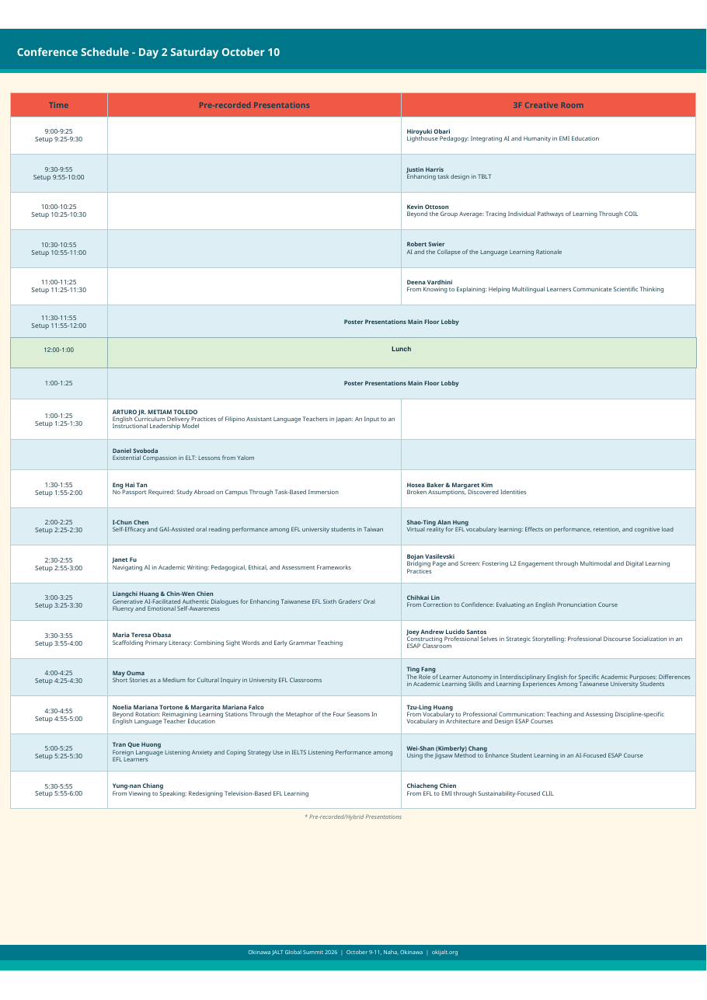
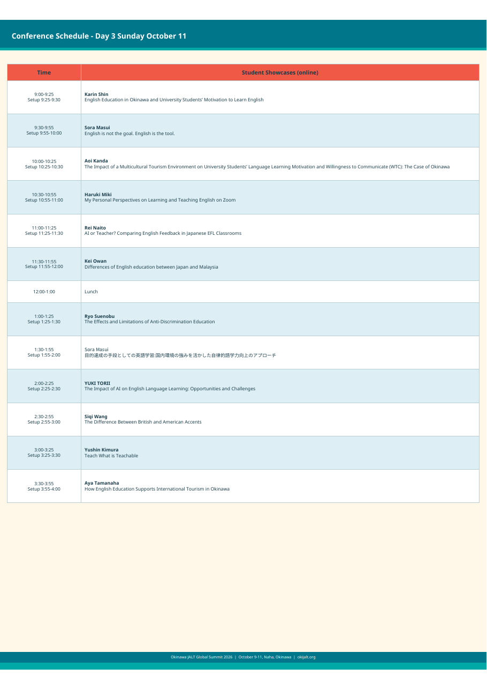

Global Summit 2026: Innovations in Language Education
A comprehensive record of presentations, insights, and discussions from three days in Naha: October 9–11, 2026, at the Okinawa Prefecture Gender Equality Center Tiruru.
Okinawa JALT Global Summit 2026
Bringing together language educators, researchers, and innovators from across Asia and beyond to explore the frontiers of language teaching and learning
Dates
October 9–11, 2026
Venue
Okinawa Prefecture Gender Equality Center Tiruru, Naha, Okinawa
Theme
Innovations in Language Education
Organiser
Okinawa JALT
Technology in ELT
The rapid integration of technology into English language teaching has transformed what is possible in the classroom. This track examines artificial intelligence, adaptive learning, digital assessment, online communication technologies, and emerging uses of generative AI.
Local Culture & Global Context
Okinawa's extraordinary cultural heritage provides an ideal backdrop for presentations exploring local identity, global awareness, heritage, CLIL, intercultural competence, and community-based language education.
Interdisciplinary Studies
Research and classroom practice informed by psychology, cognitive science, sociology, anthropology, the visual and performing arts, computational linguistics, and other fields that enrich language education.
The Okinawa JALT Global Summit 2026 was made possible through the dedication and hard work of the Okinawa JALT organising team and volunteers, who gave generously of their time and energy to bring this international gathering to life.
🏆 The Great Tug of War
One of the most beloved traditions of the Okinawa JALT Global Summit is the Great Tug of War: a spirited, community-building activity that brings conference participants together in friendly competition. Rooted in Okinawa's rich cultural heritage, where communal tug-of-war festivals (Tsunahiki) are a centuries-old tradition, this activity captured the energy and camaraderie of our international gathering. Participants from across Asia and beyond found common ground not just in the conference rooms but on the playing field, embodying the collaborative spirit that defines our professional community.
Conference Booklet
The printed program, schedules, venue guide, and committee
Welcome to Naha
The summit focused on three interconnected themes (Technology in ELT, Local Culture and Global Context, and Interdisciplinary Studies) through parallel paper presentation sessions, interactive workshops, and a lively poster session, alongside the warmth and vibrancy of Okinawan culture.
Registration: Main Lobby (1F), opening 9:00 AM, October 9.
Language: English was the official conference language, though some presenters used Japanese or a combination of both.
Venue: Okinawa Prefecture Gender Equality Center Tiruru, 3-11-1 Nishi, Naha 900-0036 (tiruru.or.jp)
Daily Schedules


Organizing Committee
Try a Few Okinawan Expressions
| Okinawan | Meaning |
|---|---|
| Mensooree | Welcome |
| Ukimisoochii | Good morning |
| Haisai | Hi (male speaking) |
| Haitai | Hi (female speaking) |
| Nifee doo | Thank you (informal) |
| Nifee deebiru | Thank you (formal) |
| Mata n wuichee wugama | Goodbye / Let's meet again |
▶ Watch a short video about Okinawa culture and language
Around the Venue
- Supermarkets: Ryubo (2-minute walk) and Kanehide (2-minute walk)
- Convenience stores: Family Mart, Seven-Eleven and Lawson, 7–10 minutes on foot
- Kokusai-dōri: about 15 minutes by bus from the Miegusuku stop
- Shuri Castle: about 20 minutes by monorail from Asahibashi Station
- Shintoshin / Omoromachi: about 15 minutes by monorail
A Special Thank You to Professor Emeritus Hiroyuki Obari
The presentation summaries in this record would not exist without the generosity of Professor Emeritus Hiroyuki Obari. Throughout the summit, he personally attended presentations, photographed and filmed each session, to capture recordings and produce the transcripts, summaries, and descriptions you will find here. His commitment ensured that the ideas shared in those rooms could reach educators who were not able to attend. We are sincerely and deeply grateful.
Conference Moments
From the Summit


Presentation Archive
Presentations, Summaries & Abstracts
Select any presentation to read its summary and submitted abstract. Day 1 and Day 2 sessions include summaries by Prof. Emeritus Hiroyuki Obari; posters, digital and student presentations are shown with the presenters' own abstracts.
Friday, October 9, 2026
19 Presentations: summaries by Prof. Emeritus Hiroyuki Obari (15); submitted abstracts (4)
Overview
Professor Obari opened with a framing of our era as a shift from VUCA (Volatile, Uncertain, Complex, Ambiguous) to BANI (Brittle, Anxious, Non-linear, Incomprehensible) — arguing that educators must help students navigate this new psychological and technological landscape. His central thesis: artificial intelligence and human wisdom are not rivals but complementary engines of a better education.
Course Design & Findings
Obari presented a 15-week university English course built on a "dual-engine" model pairing AI tools with human mentorship. Students showed a mean TOEIC score improvement of 115 points over the course. Drawing on Oxford University's motto Dominus Illuminatio Mea ("The Lord is My Light") and the biblical wisdom of Proverbs 1:7 ("The fear of the Lord is the beginning of wisdom"), he grounded the course in values-based education: cultivating not just linguistic competence but character.
Key Takeaways
- AI tools accelerate language learning when embedded in a purposeful, human-guided curriculum.
- A 15-week AI-integrated course produced 115-point average TOEIC gains.
- Educators must lead with values and critical thinking, not just content delivery.
- The BANI world demands emotionally resilient as well as technically capable graduates.
Q&A Highlights
Audience members asked about sustainability of gains after the course ended and how to handle AI dependency. Obari emphasized ongoing reflection practices and scaffolded AI use that gradually transfers agency back to the learner.
Submitted Abstract
This presentation examines a 15 week Advanced English program (April–July 2026, 16 participants) that implemented a dual engine instructional model integrating AI enhanced learning with high touch intercultural dialogue. The course combined multiple AI tools—ChatGPT, Gemini, NotebookLM, Claude, Copilot, and Grammarly—with structured human interaction, including eight sessions with native speakers, XR based immersive discussions, and weekly philosophical reflection tasks. The pedagogical aim extended beyond improving functional English proficiency to cultivating intercultural competence, epistemic awareness, and worldview literacy. Quantitative results demonstrated substantial linguistic gains across CASA, TOEIC, and TOEFL assessments, with an average TOEIC equivalent increase of 115 points. Qualitative findings indicated meaningful internal development: 65% of learners reported worldview expansion, 67.6% noted increased international perspective, and 82.3% recognized the effectiveness of AI supported learning. Students described a shift toward active, reflective language use, viewing AI not as a provider of answers but as a partner that organizes and deepens thinking, and perceiving English not as a subject to study but as a tool for communication. The course design was framed within the transition from VUCA to BANI, emphasizing that contemporary complexity increasingly exceeds human interpretive capacity. A three layer cultural model distinguished AI optimizable domains—observable and measurable—from human exclusive domains such as deep culture, ethics, and meaning making. To prevent over delegation to AI, the curriculum intentionally incorporated epistemic friction, ensuring that higher order reasoning—analysis, evaluation, and creative synthesis—remained human led. The presentation will outline the program’s architecture, including weekly AI supported drafting cycles, XR mediated dialogue, and a 2,000 word research essay designed to preserve authorship. Findings suggest that AI integrated EMI/CLIL environments can accelerate linguistic development while strengthening intercultural adaptability, critical creative thinking, and ethical literacy. Implications for curriculum design and responsible AI integration in language education will be discussed.
Overview
Owens investigated whether ChatGPT could reliably grade student essays, comparing AI scores to those of two human raters across 19 essays.
Study Design
19 student essays were evaluated by two human raters and ChatGPT using the same rubric. Inter-rater reliability between humans was first established; AI scores were then compared to the human benchmark. A calibration phase — sharing sample essays and rationale between human raters — was also tested to see if it improved AI-human alignment.
Key Findings
Calibration significantly improved alignment between human and AI scores, suggesting that structured prompting and example-based calibration can make AI grading more reliable as a feedback or screening tool.
Q&A Highlights
Significant discussion arose around the ethics of AI grading — student transparency, institutional policy, and how to handle cases where AI and human scores diverge substantially. Owens advocated for hybrid approaches where AI provides initial feedback and humans make final assessments.
Submitted Abstract
This presentation reports on an exploratory project conducted in a first-year writing course at a Japanese university. Student essays were assessed using a course rubric and graded by the instructor for official course purposes. The same essays were also evaluated by ChatGPT using the assignment information and rubric. These AI-generated grades had no impact on students’ results and were produced solely for comparison with instructor scoring. The project was motivated by growing interest in the use of AI for writing assessment and by a desire to reflect on grading practices and consistency. In addition to comparing instructor and AI-generated scores, the study explores whether 'norming' AI (by providing the AI with a small number of benchmark essays and grading rationales) influences subsequent scoring decisions. This calibration/'norming' process is treated as an exploratory element rather than as a formal intervention. The presentation will outline the assessment context, grading procedures, and approach to comparison. It will also share observations from the project and consider some of the practical questions that emerged during the process. These include the relationship between rubrics and individual grading practices, the extent to which AI-generated scores align with instructor judgments, and whether norming/calibration appears to affect that alignment. The aim is not to evaluate AI as a replacement for human assessment, but to explore its potential use as a tool for reflection and discussion in higher education writing courses.
Overview
Munday presented a pedagogically grounded framework for using short film clips to develop listening skills in A2–B1 level EFL learners, advocating a structured three-pass viewing approach.
Three-Pass Viewing Framework
- Pass 1 — Global comprehension: Watch without pausing; identify main topic and mood.
- Pass 2 — Targeted listening: Focus on specific language features (vocabulary, intonation, discourse markers).
- Pass 3 — Deep analysis: Pause and discuss; analyze meaning in context.
A Conference Moment
In a memorable and candid moment, an AV failure during Munday's live demonstration — the very clip he intended to show failed to play — inadvertently validated his central thesis: when technology fails, teachers who understand the pedagogical rationale can still guide meaningful discussion, highlighting the importance of lesson design over tool dependency.
Key Takeaways
- Short clips (2–5 minutes) are cognitively manageable and highly motivating for lower-intermediate learners.
- Authentic material exposes students to natural speech rates, connected speech, and cultural content.
- Structured repeated viewing prevents overwhelm and builds listening stamina.
Submitted Abstract
Although movies are widely used in foreign language classrooms, many practitioners highlight their potential drawbacks, including excessive length, distracting narratives, and difficulties in aligning film content with curricular goals. This presentation begins by briefly reviewing these concerns alongside the pedagogical advantages of film-based instruction. It then demonstrates how short, carefully selected episodes can mitigate common problems while enriching textbook-based lessons. Well-chosen movie sequences offer rich opportunities for motivating learners at all proficiency levels by providing authentic language, cultural insights, and humour. Scenes depicting service encounters—such as ordering in a restaurant or checking in at a hotel—are particularly effective for teaching functional language. Episodes that model common communicative functions, including invitations, also lend themselves to engaging classroom activities. The presentation provides practical guidance on selecting appropriate films, obtaining scripts through online AI resources, and using apps to convert movie audio into usable transcripts. Suggestions for formatting scripts for pedagogical purposes are also included. To illustrate these procedures, I outline a lesson on teaching invitations using a scene from Gregory’s Girl, followed by an example of creating viewing exercises from an episode of Jack & Sarah, including additional active viewing tasks. Participants will have the opportunity to try several activities using freely available YouTube sequences. The session concludes with recommendations for using movie episodes as springboards for discussion, reflection, and project work.
Overview
Demoski announced and described the launch of the ELFJ (English as a Lingua Franca in Japan) Audio Corpus — a collection of authentic spoken interactions in English among non-native speakers in Japan, designed to support ELF-oriented research and pedagogy.
Corpus Specifications
ELF vs. EFL: A Paradigm Distinction
Demoski drew a clear distinction between EFL (English as a Foreign Language — learning to approximate native speaker norms) and ELF (English as a Lingua Franca — communicating successfully with other non-native speakers). The ELFJ corpus supports the ELF paradigm by documenting successful communication strategies among multilingual speakers rather than cataloging "errors" relative to native norms.
Key Takeaways
- The ELFJ corpus offers a unique Japanese-context resource for researchers and materials developers.
- ELF-oriented instruction prepares learners for real-world international communication.
- Corpora of non-native speaker interaction challenge deficit-based models of language assessment.
Submitted Abstract
As language education continues to evolve at the intersection of technology, local culture, and global communication, English as a Lingua Franca (ELF) offers a powerful lens for rethinking classroom practice. This presentation introduces recent developments in the ELFJ Corpus, a digitally curated collection of authentic ELF interactions between Japanese university students and foreign interlocutors of 8 different nationalities. By integrating corpus based research with pedagogical design, the project demonstrates how technology can raise learners’ awareness of negotiation of meaning, strategic competence, and engagement with familiar and culturally grounded topics. The presentation highlights interdisciplinary applications of the corpus, including data driven learning tasks and listening activities that foreground both local Japanese perspectives and global communicative realities. Examples of student responses illustrate how corpus supported instruction enhances ELF awareness, fosters intercultural sensitivity, and encourages learners to position their own cultural identities within broader global contexts. Future directions include expanding the corpus through international collaboration and exploring additional technological tools for multimodal analysis. By connecting digital innovation with culturally responsive ELF pedagogy, this presentation offers practical strategies for educators seeking to enrich language learning through interdisciplinary, globally oriented approaches.
Overview
Kashimura, who grew up in Croatia and now teaches in Japan, shared her experience implementing pedagogical translanguaging — intentional, strategic use of students' full linguistic repertoire — in a Japanese university English course.
Study Design & Findings
Based on 118 student responses, the study examined attitudes toward bilingual instruction and translanguaging practices. 87% of students rated the use of Japanese as favorable within the English classroom when it was purposefully deployed. Bilingual artifacts — materials that explicitly invite comparison and movement between languages — were central to the approach.
Key Innovations
- Living bilingual lesson notes: Notes that evolve with student input, blending languages naturally.
- Bilingual artifacts: Tasks and materials designed to leverage L1 knowledge, not suppress it.
- Students reported higher engagement and lower anxiety when Japanese was strategically permitted.
Q&A Highlights
Participants debated the boundary between strategic translanguaging and code-switching without pedagogical purpose. Kashimura emphasized intentionality: every L1 use in her classroom is planned and serves a specific learning objective.
Submitted Abstract
This presentation explores pedagogical translanguaging (Cenoz & Gorter, 2022) practices in a university-level CLIL setting in Japan, where English is the students’ target language (L2) and Japanese is their dominant or first language (L1). Translanguaging practices were implemented to enable everyone to use their linguistic resources to the fullest (Garcia, 2009; Garcia & Wei, 2014), but also because the multilingual teacher felt most comfortable with translingual instruction. Both English and Japanese were used when giving oral instruction, providing explanations, and supplementing additional reading and video materials to support students’ learning of the course content. Although the core textbooks and materials were in English, students could use either language flexibly in many activities to support comprehension and engagement. They were also allowed to ask the teacher questions and answer her questions in Japanese or English. The main set of data for the present study comes from a questionnaire completed by 118 students from various majors (e.g., English, Japanese literature, economics). The goal was to assess the participants’ perceptions of translanguaging and its impact on their learning. The questionnaire was administered in the final week of the course. The participants were invited to respond in English or Japanese. Some shared their email addresses for follow-up questions. The findings suggest that translanguaging supported content learning, understanding of class policies, reduced anxiety, and helped build rapport with the non-Japanese, bilingual instructor. The participants were highly satisfied with the teacher’s use of two languages. Some reported learning new words and phrases after hearing them in both languages. On the other hand, some students noticed code-switching and expressed concerns about their own and their classmates’ over-reliance on the language. The results highlight the potential of translanguaging as a pedagogical tool in CLIL while emphasizing the need for a balanced approach to maximize L2 exposure and learning outcomes.
Overview
This presentation introduced a systematic framework for comparing national language education policies at the document level — enabling cross-country analysis of how governments prioritize and structure language education.
Framework Architecture
The framework uses two composite indices: a Policy Specification Index (how detailed and operational policies are) and a Policy Balance Index (how evenly resources and attention are distributed across learner groups and language varieties).
Comparative Example
Hong Kong and Singapore were used as illustrative cases, revealing how two similarly small, multilingual, post-colonial societies have taken markedly different policy paths — Singapore's more prescriptive bilingual policy contrasting with Hong Kong's more flexible but less consistently implemented approach.
Key Takeaways
- A document-level framework enables large-scale, reproducible policy comparison across languages and regions.
- The 0/1/2 scoring allows quantitative comparison while preserving qualitative nuance.
- Policy specificity does not always correlate with policy quality or equity.
Submitted Abstract
English language education policy (LEP) research has generated substantial insight into individual national contexts, yet comparison across countries and historical periods remains difficult. Policy documents vary considerably in language, format, terminology, scope, and purpose, limiting the development of consistent comparative analyses. This presentation introduces an approach to developing and applying policy indices within the Global English Language Education Policy Repository project, a digital research infrastructure designed to collect and analyse LEP documents from diverse contexts. The proposed indices convert recurring policy features into comparable analytical parameters. These may include the prominence of communicative language teaching, alignment with international proficiency frameworks such as the CEFR, expectations concerning English-medium instruction, teacher qualifications, assessment, digital learning, multilingualism, and the use of AI. Index construction involves defining each dimension, developing coding criteria and scoring scales, testing reliability, and refining indicators through pilot analysis. The presentation also considers how the indices can be applied to the repository corpus to identify patterns of policy convergence, divergence, and changes over time. Rather than treating policies as isolated artifacts, the approach examines how common influences are selectively adopted and recontextualised within different educational systems. By integrating a structured repository with replicable policy indices, the project aims to establish a longitudinal empirical framework for comparative LEP research. Examples from a pilot dataset will illustrate the proposed workflow. The presentation will discuss methodological challenges, including document comparability, weighting, missing data, contextual interpretation, and the risk of reducing complex policies to numerical scores, and will propose safeguards for maintaining transparency and validity.
Overview
This presentation traced a curriculum evolution from English for General Academic Purposes (EGAP) to English-Medium Instruction (EMI) for STEM students, using podcast-style assessments as the through-line for developing academic English skills.
Curriculum Progression
- EGAP stage: English content weighting at 20% — foundational academic vocabulary and structure.
- ESAP stage: Content weighting at 50% — discipline-specific language, STEM vocabulary.
- EMI stage: Content weighting at 80% — full subject-matter instruction in English.
Key Findings
Students reported a 62% increase in confidence in using English for disciplinary purposes. Podcast assessments were particularly effective because they required students to explain complex STEM concepts in accessible English, developing both comprehension and production skills simultaneously.
Key Takeaways
- A staged EGAP→ESAP→EMI pathway reduces student anxiety and builds disciplinary English progressively.
- Podcast assessments are authentic, motivating, and reveal comprehension gaps that written tasks miss.
- STEM learners benefit from explicit genre instruction in scientific explanation and argumentation.
Submitted Abstract
Producing a foreign language in real time places substantial linguistic and cognitive demands on learners. These demands are particularly evident in Chinese-to-English consecutive interpreting, where learners of English listen to short segments of speech in their native language before conveying their meaning in English. This process requires students to comprehend and retain the source message, retrieve vocabulary, construct appropriate expressions, and deliver fluent spoken English under time pressure. Generative artificial intelligence (GenAI) offers new opportunities to support this demanding process, yet its role in fostering deeper communicative competence remains underexplored. This qualitative case study investigated a GenAI-supported Assessment-as-Learning (AaL) framework implemented in an undergraduate Chinese-to-English consecutive interpreting course in Taiwan. Students engaged in four interconnected learning activities: evaluating AI-generated interpretations, conducting AI-assisted self-assessment, comparing professional interpreters' performances with AI-generated interpretations, and consulting AI following peer assessment. Data were collected through questionnaires, semi-structured interviews, AI interaction logs, and students' learning goals. The findings show that students perceived GenAI as valuable linguistic scaffolding for producing spoken English. AI supported vocabulary retrieval, phraseological choices, and alternative formulations, helping learners manage the linguistic demands of real-time L2 production. Beyond this linguistic support, comparison with professional interpreters broadened students' understanding of effective communication. They came to recognize that successful interpreting involves not only accurate language production but also mediating meaning for audiences through strategic reformulation, cultural awareness, and embodied delivery, including eye contact, gesture, pacing, and intonation. The findings suggest AI is most valuable educationally when linguistic support is embedded within opportunities for comparison, reflection, and interaction, enabling learners to progress from language accuracy toward communicative, intercultural, and multimodal competence. For language teachers, the study highlights the value of combining AI-assisted language production with expert modelling and peer interaction to help learners develop linguistic accuracy as well as communicative, intercultural, and multimodal competencies for meaningful communication.
Overview
This presentation described a community-responsive intercultural English program designed for elementary students on Kumejima, a small island in Okinawa Prefecture, responding to demographic shifts that have brought more foreign residents into the community.
Community Context
Four-Stage Program Design
- Stage 1 — Awareness: Recognizing cultural diversity in the community.
- Stage 2 — Experience: Direct interaction with foreign residents and cultural artifacts.
- Stage 3 — Reflection: Structured discussion and journaling on intercultural encounters.
- Stage 4 — Application: Student-led projects presenting intercultural learning to peers and parents.
Key Takeaways
- Even small, rural communities are becoming intercultural spaces requiring local ICC programming.
- Byram's model of Intercultural Communicative Competence provides a principled foundation for young learners.
- Community partnerships (inviting local foreign residents as guests) make English learning immediately relevant and purposeful.
Submitted Abstract
As Japan experiences significant demographic change, including a rapidly aging population, immigration, and increasing cultural and linguistic diversity, English education must reconsider its role in preparing students for an increasingly interconnected society. This paper examines the case of Kumejima in Okinawa as a study for exploring how changing demographics create new opportunities and challenges for English language education and the development of intercultural competence. English education in Japan has traditionally emphasized exam-oriented linguistic proficiency and situation-based communication with international visitors. Demographic shifts, however, suggest a need to consider how learners can also navigate cultural and linguistic diversity within their own local communities. Drawing on research into intercultural competence, English language education, and demographic change - alongside observations from the Kumejima educational context - this paper proposes a place-based approach to English education that connects local identity with global communication. It argues that Kumejima's distinctive geographical, cultural, and demographic characteristics can serve as valuable resources for innovative language education, and not solely as educational limitations. By situating English learning within students' immediate social environment, education can foster not only linguistic proficiency but also empathy, cultural awareness, and the ability to negotiate cultural differences. The paper ultimately argues that innovation in English education can emerge from local contexts, enabling small island communities such as Kumejima to connect local identity with intercultural participation in an increasingly diverse society.
Overview
This Taiwan-based pilot study examined how AI can be integrated into interpreter training as a comparator — giving trainee interpreters an additional reference point alongside professional and peer feedback.
Study Design
6 trainee interpreters completed a structured two-week training cycle incorporating four AI touchpoints per cycle: initial AI feedback on a practice interpretation, peer review, professional interpreter feedback, and a final AI comparison.
Feedback Hierarchy Findings
Professional human feedback remained the most valuable for skill development. However, AI provided consistent, immediate, and non-judgmental responses that helped students calibrate before receiving peer and professional input, reducing anxiety and increasing openness to critique.
Key Takeaways
- AI works best in interpreter training as a first-pass comparator, not a replacement for expert feedback.
- The structured two-week cycle creates a rhythm of practice and reflection that builds cumulative competence.
- Small cohort size (n=6) warrants replication at scale.
Submitted Abstract
As English-medium instruction (EMI) continues to expand in higher education in Taiwan, many universities are facing the challenge of cultivating teaching assistants who can effectively support teaching and learning in EMI classrooms. This presentation introduces an integrated dual-track development model that addresses this challenge by combining EMI Tutor Development and EMI Teaching Assistant (TA) Development, grounded in the principles of near-peer learning. The first pathway, EMI Tutor Development, recruits students with strong English communication skills across disciplines and prepares them through structured training and workshop observation. The second pathway, EMI TA Development, begins with online learning modules followed by instructor-tutor collaborated small-group workshops. Guided by EMI tutors, participants analyze authentic classroom scenarios, collaboratively identify challenges, discuss support strategies, and reflect deeply on their roles and responsibilities. By integrating real-world scenarios with near-peer facilitation, this dual-track cultivation model provides a peer-supportive learning environment in which both tutors and TAs develop practical approach to balancing subject matter with language support. Furthermore, this setup empowers tutors to strengthen their communication, facilitation and leadership skills, while equipping TAs with actionable techniques and fostering student learning in an EMI classroom. Since its implementation, the program has prepared more than 2,200 EMI teaching assistants and 67 EMI tutors. Based on post-workshop surveys, workshop satisfaction has exceeded 97%, and more than 92% of participants reported increased confidence and preparedness for their EMI TA role. In follow-up interviews, many former EMI tutors described their experience in the program as valuable preparation for graduate studies abroad or their professional careers. These findings suggest that integrating EMI tutor development with EMI TA training offers a sustainable model for strengthening institutional capacity to support EMI.
Core Synopsis
The operational truth for Japanese advanced EFL learners is this: kanji parsing literacy—the trained ability to decompose compound characters into meaning-bearing units—is a transferable cognitive asset, not a language-specific skill locked inside Japanese. When explicitly redirected toward English morphology (roots, prefixes, suffixes), it raises vocabulary-learning efficiency beyond what either morphological analysis or contextual reading achieves in isolation. The empirical anchor is a Suzuki (2017) and Nagy-linked (1999) informed design showing 72% accuracy for morphology+context versus 47% for morphology-alone and 57% for context-alone, validating a combined instruction model. The pedagogical gap is clear: Japanese university English programs systematically under-instruct morphology, defaulting instead to vocabulary lists or context-only reading—wasting a cross-linguistic asset that learners already possess. We are committing to a four-step notice→hypothesize→check→revise classroom loop that actively recruits kanji parsing intuition for English word-learning, because ignoring this transfer opportunity means leaving measurable accuracy gains on the table.
From Kanji Habit to English Power: The Transfer Logic
Kanji Parsing as Cognitive Scaffold:
Japanese readers routinely decompose kanji compounds into meaning units (e.g., 電話 = electricity + speak = telephone). This semantic decomposition habit is structurally analogous to English morphological parsing (e.g., "telephone" = tele + phone).
Transfer Hypothesis: Learners can redirect this trained decomposition skill toward English roots, prefixes, and suffixes, converting an L1 literacy habit into L2 vocabulary strategy.
Evidence Support: Hatanaka & Nakayama (1981) and Hayashi & Murphy (2009/2013) document morphological awareness as a significant predictor of L2 reading and vocabulary development; Suzuki (2017) confirms transfer from L1 morphological strategies in Japanese learners.
Empirical Grounding and Limits of Morphology-Only
Results from a Nagy-informed (1999) study design:
- Morphology-only accuracy: 47%
- Context-only accuracy: 57%
- Morphology + context combined: 72%
Interpretation: Neither strategy alone is sufficient. Morphological knowledge generates plausible hypotheses; contextual reading tests and refines those hypotheses. The combination is robust; each strategy corrects the other's weaknesses.
Limitation: Morphology-only instruction risks over-generalization (e.g., "terrible" ≠ "terra" + "ible" in its modern usage). The contextual check step is non-negotiable.
The Operational Model: Morphology + Context Beats Either Alone
Classroom Loop (4 Steps):
- Notice: Learner identifies unfamiliar word and spots morphological components (prefix, root, suffix).
- Hypothesize: Draws on morpheme knowledge to generate a meaning prediction.
- Check: Tests hypothesis against sentence/paragraph context and/or dictionary.
- Revise: Updates morpheme mental model based on actual usage—especially for false cognates, semantic bleaching, or irregular forms.
Why the Loop Works: It is metacognitive (learners monitor their own guessing), iterative (each encounter deepens morpheme knowledge), and immediately testable (context provides rapid feedback without teacher intervention).
Curriculum Design: Teaching for Utility, Not Trivia
Selection Criteria for Morphemes to Teach: Frequency (high-frequency roots yield most coverage), productivity (how many new words the morpheme generates), regularity (how consistently the morpheme predicts meaning), and learning difficulty (prioritize morphemes that genuinely mislead without instruction).
Suggested Morpheme Inventory: Latin/Greek roots (port-, scrib-, ven-, dict-), high-frequency prefixes (pre-, re-, un-, mis-, sub-), and common suffixes (-tion, -ment, -ous, -ify) — roughly 20-30 morphemes covering a high proportion of academic vocabulary.
L1-Bridge Strategy: Introduce each morpheme via a Japanese kanji compound analogy to activate prior semantic schema before introducing English vocabulary items.
Strategic Payoff and Boundaries
Payoff:
- Converts a passive L1 literacy skill into an active L2 vocabulary strategy.
- Reduces over-reliance on dictionary lookup for unknown words.
- Builds metalinguistic awareness transferable to reading speed and academic writing.
Boundaries: Morphological instruction is most effective for advanced learners (approximately B2+) who have sufficient vocabulary base to recognize morpheme patterns. Below B2, context-only or word-by-word instruction may be more appropriate.
Program Gap in Japan: Under-Instruction of Morphology
Observation: Japanese university English curricula predominantly use vocabulary lists or extensive reading without explicit morpheme instruction, despite strong evidence for its efficacy with Japanese learners.
Consequence: Learners fail to leverage a cross-linguistic transfer advantage that is already primed by kanji literacy.
Policy Implication: Curriculum developers should audit existing vocabulary instruction for morpheme coverage and embed explicit morphological strategy training in at least one dedicated unit per academic year.
Next Move (Action Items)
- Design and pilot a 6-unit morphological awareness module (30–45 minutes per unit) using kanji-analogous introduction, 4-step loop practice, and vocabulary self-assessment rubrics —
- Build a high-frequency English morpheme inventory (20–30 morphemes) with kanji-companion examples for Japanese EFL contexts —
- Conduct a within-class quasi-experimental study comparing morphology+context vs. context-only vocabulary gains to validate the transfer hypothesis locally —
- Integrate morpheme journals (learner-maintained logs of new morpheme discoveries and encountered words) as ongoing formative assessment —
Core Synopsis
The operational truth: pedagogical translanguaging—the planned, strategic use of all languages in a learner's repertoire as teaching and learning resources—measurably increases engagement and reduces anxiety in Japanese university EFL classrooms, but only when it is intentional, transparent to students, and backed by a principled theoretical frame. The presenter, Natasha Kashimura, brought lived multilingual experience (Croatian upbringing, academic training in Texas, marriage into a Japanese Air Self-Defense Force family) to the methodological design, grounding the course in Lightbown & Spada's "How Languages Are Learned" and building bilingual lesson artifacts that evolve with student input. Survey data from 118 responses across six questions showed consistently positive attitudes toward structured bilingual instruction. The stakes: if Japanese EFL pedagogy continues treating L1 use as failure rather than resource, it forfeits the cognitive and affective advantages of translanguaging—higher comprehension, lower anxiety, and more authentic engagement—for a compliance with monolingual norms that the research base does not support.
Personal and Pedagogical Rationale
Presenter Identity: Croatian background, academic formation in Texas (where she met her husband, a Japan Air Self-Defense Force member), now teaching at a Japanese university.
Translanguaging Rationale: Drawing on Lightbown & Spada ("How Languages Are Learned"), she argues that L1 is not a contaminant but a resource—a position supported by translanguaging theory (Cen Williams, Ofelia García) and bilingual education research.
Core Commitment: Use Japanese purposefully and visibly, not apologetically or covertly, to scaffold comprehension and metacognitive awareness.
Defining and Applying Pedagogical Translanguaging
Definition: Pedagogical translanguaging = planned instructional use of more than one language to support learning, as distinguished from spontaneous code-switching or L1 avoidance. It is intentional, principled, and transparent.
Key Implementation Tools:
- Google Doc living bilingual lesson notes: Class notes updated in real time, blending English and Japanese, with students contributing to and accessing them actively.
- Bilingual assessments: Tasks that explicitly invite students to demonstrate understanding in both English and Japanese—foregrounding comprehension over language compliance.
- Structured L1 moments: Designated points in the lesson where Japanese is the medium of reflection or concept-checking, before returning to English production.
Eleven Labs Voice Cloning (Technology Discussion): Raised as an emerging tool for creating target-language audio materials with personalized voices; copyright concerns around textbook chapters discussed in the session.
Data Analysis of Student Feedback on Translanguaging Practices
Sample: N = 118 student responses across 6 survey questions.
Summary of Findings:
- Majority reported higher understanding of English content when Japanese was used strategically.
- Students expressed lower anxiety about making errors in English when the L1 safety net was available.
- Most preferred the bilingual approach over English-only, especially for complex grammar explanation and new vocabulary introduction.
- A minority expressed concern that Japanese use "weakens" English-only immersion—addressed in class by explaining the translanguaging rationale explicitly.
Implications: Transparency about the pedagogical rationale is essential; students who understand why L1 is permitted become advocates for the approach rather than skeptics.
Q&A on Student Proficiency and Critical Thinking
Q: Does translanguaging disadvantage high-proficiency students who don't need Japanese support?
A: High-proficiency students benefit differently—they often become natural metalinguistic mediators, explaining L1-L2 contrasts to peers, which deepens their own understanding.
Q: Does bilingual instruction reduce critical thinking in English?
A: No evidence for this in the data; in fact, the ability to compare and contrast linguistic systems across languages is itself a high-order cognitive operation.
Peer Discussion on AI Tools and Teaching Methodologies
Session Discussion: Participants shared experience with AI-assisted lesson planning, bilingual content generation, and AI pronunciation tools.
Copyright Discussion: Textbook publishers restricting AI-assisted chapter reproduction was raised as an emerging legal and pedagogical issue without clear institutional guidance.
Key Insight: The session modeled the translanguaging ethos it advocated—a multilingual, multi-perspective professional dialogue where different linguistic and cultural backgrounds were assets, not obstacles.
Submitted Abstract
This presentation explores the concept of phatic labour to understand how conditions for engagement are produced in technology-mediated English language teaching (ELT) classrooms at a Japanese university. It draws on qualitative reflections from classroom practice, supported by learning management systems (LMS), online submission platforms, and routine digital communication tools such as email, messaging applications, Teams, and Google Classroom, which are used for announcements, feedback, and ongoing student–teacher communication beyond the classroom. 'Phatic labour' is interpreted as more than a mere focus on communication or interaction and is used here to describe the often-invisible, continuous work through which the conditions of possibility for learning are produced and sustained. This includes shaping the classroom atmosphere, calibrating attention and affect, organising temporal rhythms, and maintaining a shared sense of participation through which engagement emerges. From this perspective, phatic labour is understood as part of the infrastructural work of pedagogy itself, a form of pedagogical world-building that underpins how learning becomes possible in practice rather than an additional teaching technique. The analysis draws primarily on theories of immaterial labour and communities of practice to frame how these conditions are both institutionally structured and locally enacted in everyday teaching contexts. The study then argues for innovation in language education by emphasising how teachers actively create the temporal and relational conditions that enable engagement, rather than focusing solely on technological adoption or tool-based enhancements. It concludes by suggesting that phatic labour offers a useful analytic lens for reframing how teachers might evaluate and refine their own practice in technology-mediated environments, moving beyond tool-centric metrics toward a focus on the conditions they produce.
Core Synopsis
The operational truth: a well-designed, technology-enhanced EFL unit grounded in a locally meaningful topic—rice and its global journey—can simultaneously develop oral fluency, intercultural awareness, and critical thinking in young Taiwanese learners, while connecting to SDG 12 (Responsible Consumption and Production). Michelle Lin, presenting for her co-author (a Filipino co-teacher) who was absent, described a six-lesson unit implemented with 50 EFL learners (41 third-graders, 9 sixth-graders) at Dian Elementary School in rural Taichung. Technology tools—Kahoot, Padlet, and Curipod—were integrated at each phase to support vocabulary acquisition, peer collaboration, and formative feedback. The instructional bet is that local-to-global content (Taiwanese rice → international markets → SDG 12) motivates young learners more than decontextualized English practice, and the qualitative multi-case findings support this. The constraint: no standardized proficiency pre/post-test was used, limiting claims about English gains specifically.
The Instructional Bet: Local-to-Global Bridge Using Rice
Content Rationale: Rice is culturally central to Taiwan (Dian is a rural agricultural community), immediately familiar to students, and connects naturally to global trade, food security, and sustainability—all accessible to elementary-age learners with scaffolding.
SDG 12 Connection: Responsible Consumption and Production was used as the content frame, giving students a global citizenship lens on a familiar local crop.
Intercultural Dimension: A Filipino co-teacher introduced sinangag (Filipino fried rice), expanding students' cultural reference frame and modeling non-native English as a legitimate global communication medium.
The Six-Lesson Spiral and Tooling
- Lesson 1: Introduction to rice in Taiwan — local vocabulary, culture, Kahoot review.
- Lesson 2: Rice around the world — Padlet for student research posts; global food vocabulary.
- Lesson 3: Rice and sustainability — SDG 12 discussion; Curipod interactive slides for formative check.
- Lesson 4: Filipino co-teacher session — sinangag lesson; intercultural exchange via English.
- Lesson 5: Student project work — Padlet sharing of findings; oral presentation preparation.
- Lesson 6: Presentation day — student oral presentations assessed for fluency, content, and engagement.
Total Instruction Time: 240 minutes (6 lessons × 40 minutes).
Evidence Base and Assessment Modality
Design: Qualitative multi-case design — teacher field notes, student artifact collection, and observational data across the two-grade cohort.
Rationale for Qualitative Approach: Young learners (Grade 3, age 8–9) cannot reliably complete standardized proficiency instruments; performance-based oral assessment and portfolio artifacts are more developmentally appropriate.
Limitation: Absence of standardized proficiency measures limits generalizability claims about English gains specifically.
Findings
Engagement and Motivation: All data sources indicated high student engagement, particularly during the Filipino co-teacher session and oral presentation day.
Oral Fluency: Teacher observations noted increased willingness to speak English in Lessons 5–6 compared to Lesson 1, attributed to content familiarity and reduced performance anxiety.
Intercultural Awareness: Students demonstrated awareness of rice as a cross-cultural food during presentations, citing Filipino and Japanese rice dishes alongside Taiwanese examples.
SDG Literacy: Grade 6 students in particular were able to articulate basic SDG 12 concepts in English by Lesson 5.
Constraints and Validity Risks
- Single school, single unit: Context-specific findings may not transfer.
- No control condition: Cannot isolate technology contribution from content or teacher effects.
- Researcher role overlap: Lin's co-teacher was also the primary data collector.
- No delayed follow-up: Retention of vocabulary and oral gains not tracked beyond the unit.
Strategic Upgrades
- Add a pre/post oral fluency assessment (e.g., 1-minute picture description task) to enable quantitative comparison.
- Expand to multiple schools and grade levels to test transferability of the local-to-global hook.
- Document the co-teaching collaboration process explicitly as an intercultural pedagogy model.
- Develop a student-produced SDG bilingual glossary as a unit artifact for portfolio assessment.
Action Items
- Develop a standardized pre/post oral production rubric for the unit to enable cohort-to-cohort comparison —
- Extend the unit to include a peer-school video exchange (Taiwan + Philippines or Taiwan + Japan) to make the intercultural learning reciprocal —
- Create an open-access version of the unit materials (lesson plans, Kahoot templates, Padlet prompts, Curipod slides) for sharing at CALL and EFL conferences —
Submitted Abstract
Glocalization integrates local and global perspectives, enabling learners to use English for meaningful communication in both contexts. Therefore, English educators should incorporate glocalized materials that connect learners’ local experiences with global perspectives. Meanwhile, advances in digital technology have expanded the possibilities of technology-enhanced language learning (TELL), allowing learners to explore cultural content, interact with multimedia resources, and practice English communication in authentic and engaging ways. Furthermore, glocalized learning materials can promote responsible consumption by helping learners understand the cultural, environmental, and social values embedded in local products, such as rice, while developing awareness of sustainable choices in a global context. This multi-case study examined the influence of glocalized rice lessons and technology-enhanced language learning (TELL) tools (e.g., Curipod, Kahoot, and Padlet) on the intercultural awareness and oral fluency of 41 third-graders and 9 fourth-graders in Taiwan. Thematic analysis of lesson plans, teacher reflections, classroom observations, and student worksheets revealed three major findings. First, realia and five-senses activities enabled participants to explore and compare local and global rice cultures, helping them develop a deeper understanding of glocal perspective. Second, the use of picture books, guiding questions, group discussions, rice consumption journals, and World Café activities encouraged participants to reflect on their personal eating habits, examine the cultural and environmental implications of rice consumption, and develop greater awareness of responsible consumption practices. Third, TELL tools and instructional activities, supported by clear rubrics, provided learners with structured opportunities to practice English, engage in interactive communication, monitor their performance, and receive feedback, which supported the gradual development of their oral fluency. Based on these findings, this study provides pedagogical implications and recommendations for language teachers and teacher educators on designing and implementing glocalized rice lessons through technology-enhanced language learning.
Core Synopsis
GenAI is no longer a peripheral "tool" in academic writing; it is now a co-actor that reshapes agency, authorship, and validation in higher education, forcing a shift from human-centered literacy models to entangled human–non-human assemblages where knowledge is co-constructed, not merely produced. The study team designed a controlled classroom intervention with M.Ed. students at Simon Fraser University: groups prompted ChatGPT/Copilot/Gemini to generate a 300-word response paper to an AI-and-academic-integrity article, then students critiqued the AI text for voice, bias, reliability, and formulaicity, and finally authored a meta-response—some even prompting AI to critique its own output. Evidence showed reciprocal learning and leakage of prior context (AI surfacing a student's British/Vietnam experience from earlier chats), AI's tendency toward neutrality and formulaic structure even when the source text argued against it, and a consistent student-reported gain in critical AI literacy and self-awareness. The stakes are clear: integrating AI into assessment can deepen engagement and literacy, but only if instructors explicitly stage tasks to expose AI's strengths (scaffolding, structure) and weaknesses (depth, stance-taking, contextual judgment), and if programs accept decentering the human while tightening epistemic controls. We are committing to use AI as a co-constructor in pedagogy while retaining critical oversight, because ignoring the entanglement is no longer viable and uncritical adoption will degrade knowledge reliability.
Reconfiguring Academic Writing Through AI: A Structured Analysis
From "Tool" to Co-Actor: The New Materialist Pivot
Thesis: New materialism reframes AI as an agentic participant in learning (intra-action, not mere interaction), dissolving the human/non-human agency binary.
Evidence: Students reported AI self-assessing its own output (Copilot critiquing tone/APA) and demonstrated reciprocal adaptation (AI picking up user identity/language practices across sessions).
Implication: The epistemic infrastructure of academic writing now includes LLMs, making authorship and agency distributed across human and machine actors.
The Academic Literacies Overlay: Social Practice Meets Machine Mediation
Baseline: Academic literacies treats writing as a social practice shaped by context, genre, identity, and epistemology.
Overlay: AI-mediated writing adds a machine-structured layer that standardizes voice and structure, often flattening stance and reducing risk-taking—even when the genre calls for deviation.
Result: Students must now learn dual literacies—traditional academic conventions and critical AI literacy (prompting, auditing, bias detection, reliability testing).
The Classroom Intervention: Design and Mechanics
Cohort: Five M.Ed. students (SFU) contributed AI-generated texts, their critiques, and interviews; the program context included PolyU's integration of AI across language courses ("AI as a tool for language learning," 176 sections).
Task Sequence:
- Group prompting of LLMs to write a 300-word response paper to an AI-integrity article (from the instructor's textbook).
- Group critique of the AI output focusing on voice, stance, bias, reliability, "AI formulaic style."
- Individual homework: replicate the workflow, generate AI response, then produce a meta-response; one student prompted AI to critique its own work and then wrote a "meta-meta" response.
Assessment Framing: Traditional response-paper scaffolding (claims, evidence, evaluation, APA sources) was preserved to isolate AI's contribution and highlight contrasts.
Observed Benefits: Literacy Gains and Reflexivity
Critical AI Literacy: Students identified AI's neutrality bias, cautious tone, and structural formulaicity; they reflected on their own tendencies (e.g., over-agreeing with authors) by contrasting with AI's outputs.
Engagement Depth: The meta-task forced deeper processing of the source article; students interrogated evidence patterns and stance, not just content recall.
Reciprocity in Practice: AI reused contextual signals (nationality, prior conversations) and language behavior (translanguaging), reinforcing the entanglement claim.
Observed Risks: Reliability, Privacy, and Superficiality
Depth Limit: AI could execute the task but often failed to align writing practice with the article's thesis (e.g., critiquing formulaicity while producing formulaic prose despite prompts).
Bias and Deference: AI's "neutrality" default can reproduce academic norms under critique; potential reluctance to challenge AI-positive articles was flagged by students.
Context Memory and Privacy: LLM session memory led to unprompted personalizations (e.g., "as a British woman…"), implying persistence across sessions/devices and raising privacy/consent concerns.
Over-Scaffolding: Students noted AI's tendency toward safe, structured paragraphs with transitions and SVO sentences, curbing authentic voice and risk-taking.
The Dialectic: Integrity Threat vs Pedagogical Leverage
Thesis (Threat): GenAI undermines authorship and integrity; students outsource cognition.
Antithesis (Tool): GenAI scaffolds learning, supports multilingual/translingual learners, and accelerates drafting.
Synthesis (Protocolized Co-Construction): With carefully staged tasks that require critique, evidence verification, and reflective meta-writing, AI can be used to expose and correct its own limitations while strengthening students' epistemic agency.
Programmatic Implications: Ontophilosophic Assemblages, Practically
Operating Model: Teacher, student, text, and LLM form an assemblage that reconfigures per task; reliability emerges from critical checks, not tool abstinence.
Governance: AI must be explicitly integrated into assessment design (prompt logs, audit rubrics, source verification) and policy (privacy, disclosure, acceptable use).
Identity: Educators can be "Teacher A" (proctoring, pen-and-paper) and "Teacher B" (AI-integrated co-construction) within the same course, choosing mode by learning outcome and risk tolerance.
Action Items
- Implement the AI-mediated response-paper protocol (AI generate → student critique → student meta-response) with explicit rubrics for voice, bias, reliability, and stance —
- Require students to submit prompt transcripts and AI outputs as appendices to enable auditability —
- Add a privacy disclosure module clarifying session memory risks and instruct students to use institutionally approved accounts/devices —
- Codify AI usage policies (disclosure requirements, acceptable assistance, source verification standards) in course syllabi across the "AI as a tool for language learning" curriculum —
- Deploy a critical AI literacy workshop covering prompting, bias detection, and verification for all language-education cohorts —
- Expand the sample beyond five students and quantify outcomes (e.g., rubric-based gains in critical stance, evidence evaluation) across cohorts to validate generalizability —
- Document cases of AI session memory/personalization and develop guidance for mitigating unintended personalization in academic contexts —
Submitted Abstract
Generative AI is today perhaps the key topic for teachers of academic writing in higher education, with a growing body of research addressing issues of academic integrity and pedagogical effectiveness (e.g., Cheng et al., 2025; Cotton et al., 2024). However, this somewhat instrumental focus overlooks how GenAI reconfigures students’ agency, knowledge formation, and authorship. In this presentation, I bring a new materialist lens to analyze the intra-actions among graduate students in a TESOL program, GenAI, and academic texts. In doing so, I foreground three theoretical aspects: the decentering of the human, the reconceptualization of non-human agency, and the reciprocal nature of human-AI learning (Pennycook, 2018). I present data from a qualitative study at a Canadian university, which involved students in a graduate TESOL program using GenAI tools, including ChatGPT, Copilot, and Gemini, to write a first draft of an assessed response paper on language education, before writing their own critical response to the GenAI-generated text. Data sources include GenAI-generated texts, students’ written responses, written reflections on the co-construction process, and post-task interview excerpts. Students found the GenAI texts to be well structured but questioned the texts’ epistemic authority, identifying limitations in critical engagement, personal voice, and factual accuracy, which included GenAI’s inaccurate statements about students’ professional contexts. The writing process itself fostered critical AI literacy as students examined GenAI’s argumentative strategies and reflected on their own writing practices. I will discuss how a new materialist perspective can offer academic writing teachers a useful framework for understanding complex human and non-human entanglements in their classes. The discussion will be accessible for all, and of interest to language educators, writing instructors, and researchers who are interested in critical AI literacy instruction in multilingual higher education contexts and rethinking writing pedagogy.
Core Synopsis
The presentation advances a context-first view of politeness pragmatics: perceived severity of complaints is not a generic "East vs. West" trait but a scenario-bound, culture-specific judgment with practical stakes for L2 teaching. The study tested nine real-world complaint scenarios across L1 British English, Thai, and Japanese working adults (n=154) using a discourse completion task plus a 6-point severity scale; a linear mixed model found perception differences tied to nationality and scenario, not age or gender. Two scenarios anchored the evidence: repeated lateness (Thai rated significantly less serious than British) and reporting coworker misconduct to a manager (Japanese rated most serious; British mid; Thai lowest). The causal logic aligns with documented workplace and cultural norms—Thai tolerance around punctuality and consultative leadership, Japanese vertical workplace expectations and face risk, British indirectness with mid-range workplace distance—supporting the thesis that severity and face threat hinge on relational power, distance, and local norms. We are committing to a pragmatic takeaway: role plays and L2 curricula must teach not just "how to complain" but "when and why it's serious" in specific cultures, or else learners will under-select strategies, misjudge face risk, and fail in real interactions.
Study Architecture and Findings: Context-Driven Pragmatics
Research Frame: From Generalizations to Situational Politeness
Focus: Perceived severity of complaint scenarios as a function of context (power/distance) across L1 Japanese, Thai, and British English.
Rationale: Prior pragmatics over-relied on broad cultural labels (e.g., "negative politeness cultures"); the current lens centers relational situations to recover analytic detail.
Target Gap: British English pragmatics underrepresented; complaint perception under-studied; overreliance on student samples limits generalizability.
Method: Scenario Design and Measurement Logic
Participants: 154 working adults (68 Thai, 35 Japanese, 51 British); students excluded; controls for native language and advanced proficiency in other languages.
Instrument: Discourse Completion Task plus a 6-point severity scale (forced choice without a neutral midpoint).
Scenarios: Nine real-life cases varying power/distance (friend lateness, over-messaging, bothersome coworker, broken appliance/landlord, senior staff workload, reporting coworker misconduct, hotel late check-in with difficult staff, queue-cutting stranger, train boombox).
Cultural Anchors: Stereotypes and documented incidents used pragmatically (e.g., UK queuing norms; Japan train boombox case; Thai hospitality context; Japanese senpai–kohai dynamics).
Results: Where Differences Actually Showed Up
Statistical Outcome: Significant effects only for scenario and nationality; age and gender non-significant after correction.
Key Divergences:
- Scenario 1 (friend repeated lateness): Thai respondents rated it ~1.07 points less serious than British on average.
- Scenario 6 (reporting coworker misconduct): Japanese rated ~0.94 points more serious than British; Thai rated ~1.09 points less than British.
Causal Interpretation: Face-Threat Mechanics by Culture
Lateness (Friend Context):
- Thailand: Lower punctuality salience; reduced perceived positive/negative face threat in close relationships; repeated tardiness less disrespectful.
- UK: Punctuality tied to respect (positive face) and autonomy (negative face); repeated violations heighten face threat in close friendships.
Reporting Misconduct (Boss–Employee Context):
- Japan: Vertical workplace roles intensify face risk for both speaker and manager; reporting implies role challenge and reputational stakes.
- Thailand: Preference for consultative leadership and closer manager–employee relationships reduces face threat and perceived risk.
- UK: Moderate workplace distance with social "banter" culture places severity between Japan and Thailand.
Educational Leverage: From Forms to Socio-Pragmatic Competence
Problem: L2 learners underuse complaint strategies and misread cultural severity.
Solution Imperative: Teach scenario-specific perception (severity, face calculus) alongside linguistic forms to prevent inappropriate or ineffective complaints.
Use Cases: Role-play design calibrated to local severity norms; textbook integration of power/distance variables; preparing learners for necessary but uncomfortable complaints (e.g., landlord issues).
Next Move (Action Items)
- Integrate scenario-based severity modules (power/distance specific) into L2 complaint units for Japanese, Thai, and British English contexts —
- Redesign role plays to encode local face-risk cues (e.g., UK punctuality, Japan reporting protocols, Thai consultative manager dynamics) and remove neutral midpoints in perception checks —
- Adopt a forced-choice severity scale (no midpoint) in pragmatics assessments and pilot across the nine scenarios to validate learning impact —
- Run workshops on teaching socio-pragmatic perception (how serious is the complaint in this culture?) with practice on reframing identical complaints across the three cultures —
Submitted Abstract
An important area of inquiry within 21st-century pragmatic research has been speech acts and politeness. There has been a notable shift from broad universal claims of politeness to more scenario-based/relational approaches to research. Current speech act literature often exclusively examines educational scenarios/student populations and does not include many comparisons of British English to other Asian languages. Additionally, few studies examine the perception of speech acts or their scenarios where they occur. This study addresses this gap by researching the perception of scenarios where complaints occur across British English, Thai, and Japanese L1 speakers. A trilingual discourse completion task (DCT) was employed, with various scenarios that had differing power and distance differentials: coworkers, senior staff/junior staff, boss/employee, property manager/tenant, friends, and strangers. Each scenario included a 1 (not serious) to 6 (serious) rating scale. Overall, of the 154 responses received, 51 were British, 35 were Japanese, and 68 were Thai. In addition to gender, age was controlled for over three age groups (20-29, 30-39, and 40+). Whilst age groups had fairly proportional representation, there was a gender imbalance (men: 46, women: 106, ‘other’: 2). A linear mixed model (LMM) was run to determine whether perception scores differed across nationality groupings, with significant differences across nationality groupings found (p<.001). According to pairwise comparisons, significant differences were found in two scenarios: a friend who is repeatedly late (p<.001) and reporting another coworker’s inappropriate behaviour to a manager (p<.001). The results of this study demonstrate limited differences in how different L1 speakers from different backgrounds perceive the severity of face-threatening situations. Given the situational nature of politeness studies, these findings may have implications for L2 education. By understanding the differing perceptions of complaint scenarios, these can be incorporated into textbooks and syllabi to train students using methodologies such as role-plays to teach cross-cultural differences.
Overview
A follow-up and extended discussion session building on the policy comparison framework introduced earlier in the day, with audience participation in applying the 7-domain, 29-indicator rubric to additional country cases and discussing its implications for language policy advocacy.
Discussion Highlights
- Participants raised questions about how indigenous and minority languages are treated within the framework's domains.
- Discussion of how policy documents differ from policy implementation — the framework scores documentation, not enacted reality.
- Interest in adapting the framework for regional or sub-national policy analysis.
Key Takeaways
- The framework has strong potential as an advocacy tool for identifying gaps in national language education commitments.
- Documenting what policies say is a necessary first step before evaluating what they achieve.
- Cross-regional collaboration among researchers using this framework could yield a valuable comparative database.
Submitted Abstract
This presentation introduces a work-in-progress project designed by two instructors at two different universities in Japan to create authentic opportunities for English communication beyond the classroom through sustained inter-university collaboration. Drawing on research highlighting the value of authentic audiences and collaborative learning in increasing learner engagement and ownership (e.g., Hamilton et al., 2024; Chang et al., 2024), the project aims to provide students with opportunities to communicate in meaningful and collaborative ways. Throughout the semester, students from four English classes work in in-class and cross-institutional groups to design and conduct action research projects exploring issues relevant to university students and campus life. Topics are selected by the students themselves and may include student wellbeing, study habits, campus culture, sustainability, student services, local communities, or other aspects of the university experience. Students document the progress of their projects through short bi-weekly videos shared on Padlet, while students from the partner university respond by asking questions, providing structured peer feedback, comparing perspectives, and engaging in ongoing discussion in English through video and text. As the project will be in its early stages at the time of the conference, this presentation focuses on the pedagogical design, theoretical rationale, and research methodology underpinning the collaboration. We will outline the project structure, discuss the practical considerations involved in implementing cross-institutional collaboration, and share preliminary observations and initial student feedback from the first phase of the project. The presentation concludes by inviting discussion on the opportunities and challenges of designing sustainable inter-university collaborations that promote authentic communication and student engagement in English-language classrooms.
Note: A detailed summary of this presentation is not available. The abstract submitted by the presenter is provided below.
About the presenter: Chen-Hsiu Grace Kuo is an Associate Professor at National Taiwan University. She specializes in phonetics, laboratory phonology, psycholinguistics, and second-language acquisition. Dr. Kuo’s research focuses on the perception, production, and acquisition of prosody; individual differences, including autistic traits and working memory; and the phonetic cues that signal turn-taking in conversation.
Abstract
Recent language teaching research emphasizes shifting learners from passive listening to active podcast production to foster communicative agency and genre mastery. This presentation outlines the pedagogical framework and student outcomes of incorporating Student-Generated Podcasts (SGPs) across prerequisite English language courses, detailing its upcoming expansion into English as a Medium of Instruction (EMI) content learning. During the previous semester, SGPs were implemented in two tertiary prerequisite courses: General Freshman English (n = 26, CEFR B2) and ESAP (English for Specific Academic Purposes) for STEM (Science/Technology/Engineering/Math) students (n = 15, CEFR B2+). Tasks were strategically scaffolded based on course goals and learner needs. Freshman English students exercised autonomy by choosing between solo or interview formats. STEM students completed two required tasks: a solo episode explaining a technical field concept and a collaborative interview episode. To mitigate performance anxiety and ensure academic rigor, explicit pre-production scaffolding, including detailed outlines, full scripts for solo tracks, and structured teacher/peer feedback, was integrated prior to final audio recording. Student feedback was overwhelmingly positive. Learners reported that creating podcasts deepened their structural understanding of academic discourse and increased motivation by allowing them to present self-selected topics. Building on these results, the upcoming semester will adapt this SGP model for an EMI context within an Introduction to Phonetics course. Students in the EMI setting will produce technical audio episodes to demonstrate content knowledge and spoken accuracy. The presentation will bring insights into designing assignment templates, structuring pre-production workflows, providing formative feedback, and utilizing podcasts as a bridging task from language learning to full EMI engagement.
Note: A detailed summary of this presentation is not available. The abstract submitted by the presenter is provided below.
About the presenter: Heng-Tsung Danny Huang currently works as a full professor of Foreign Languages and Literatures at National Taiwan University in Taiwan. His research interests include language testing, technology-enhanced language teaching and learning, and individual differences in SLA.
Abstract
In the year of 2021, the Taiwanese government launched the Program on Bilingual Education for Students in College (i.e., the BEST Program) in an effort to foster a bilingual teaching and learning environment, enhance the English proficiency of students, and promote the international competitiveness of the higher education in Taiwan [Language Training & Testing Center (LTTC), 2024]. To assess the effectiveness of this program, it has also commissioned the LTTC to construct and administer a locally developed English proficiency test, namely, the BEST Test of English Proficiency (BESTEP). This study constitutes one of the earliest attempts that set out to evaluate the validity of the speaking component of BESTEP (BESTEP-S) via exploring the nature and impact of the strategic behaviors that this speaking component elicits. A total of 378 Taiwanese English learners participated in this study by sitting for an official BESTEP-S administered by the LTTC and completing a custom-designed survey inventory that had been validated on another128 English learners. Exploratory factor analyses and two-step structural equation modeling performed on the collected data led to three primary findings. First, the BESTEP-S activated 5 sets of strategic behaviors: metacognitive strategies, global planning strategies, local planning strategies, discourse synthesis strategies, and communication strategies. Second, although inducing mostly construct-relevant strategic behaviors, the absence of strategy use facilitating interpersonal interactions might incur the issue of construct underrepresentation. Third, metacognitive strategies, discourse synthesis strategies, and communication strategies affected BESTEP-S performance statistically positively, while local planning strategies applied a significantly negative impact. In light of these findings, the researcher proposes implications for second/foreign language speaking assessment theory and practice.
Note: A detailed summary of this presentation is not available. The abstract submitted by the presenter is provided below.
About the presenter: Roy Kemm is a lecturer at Meio University in Okinawa. His professional interests include teacher-generated materials, materials development, and language teacher education. He has designed and self-published university EFL textbooks and is currently undertaking a PhD exploring how novice English teachers develop materials development practices during their early careers.
Abstract
Self-publishing has become an increasingly viable option for language teachers, yet many still view textbook publication as something reserved for commercial publishers or experienced authors. This presentation draws on the presenter's experience of independently writing and self-publishing a university-level EFL textbook to explore the practical realities of the process. Rather than focusing on textbook design or pedagogy, the session will highlight practical lessons learned during planning, page design, template development, copyright and permissions, revision, and navigating the print-on-demand publishing process. Throughout the session, the presenter will share examples of common challenges, unexpected obstacles, and practical solutions encountered during the project. Participants will leave with a clearer understanding of the self-publishing process, greater confidence in evaluating whether self-publishing is appropriate for their own context, and practical advice that can help prospective first-time teacher-authors avoid common pitfalls.
Note: A detailed summary of this presentation is not available. The abstract submitted by the presenter is provided below.
About the presenter: university professor, SLA researcher
Abstract
This study examines how Kinesthetic Learning reduces psychological barriers in All English (AE) reading instruction among Japanese high school students. Text‑mining showed that pre‑instruction “不安” (anxiety) shifted to post‑instruction perceptions such as “聞き取る” (to understand spoken English) and “楽しい” (enjoyable), indicating reduced affective filters. Activities like Walk & Read and Running Dictation improved listening confidence, vocabulary growth, and motivation across the target levels (CEFR B1–B2). Thematic Analysis revealed increased autonomous learning and test‑score gains, suggesting that movement‑based AE instruction fosters emotional safety and deeper processing of input.
Saturday, October 10, 2026
13 Presentations: summaries by Prof. Emeritus Hiroyuki Obari (12); submitted abstract (1)
Core Synopsis
The operational truth that this presentation forces us to confront: AI now functions as a functional substitute for second language acquisition in the majority of practical communication contexts—real-time translation, multilingual interface access, cross-lingual document comprehension—making it necessary to ask, with intellectual honesty, whether SLA as a field is defending the right things for the right reasons. The presenter's diagnosis: SLA is a 60-year enterprise that has generated enormous empirical knowledge but has largely failed to consistently accelerate language learning outcomes at scale in institutional settings, and now faces a technological discontinuity (AI as real-time linguistic intermediary) that dissolves the rationale that motivated the field's founding. The AI discontinuity is not incremental improvement—it is a categorical shift: the friction of linguistic difference, which SLA sought to reduce through learning, is now addressable at machine speed. The stakes are high: if SLA does not pivot from "how to learn languages better" to "how societies configure language, identity, and human development in a linguistically flat world," it risks irrelevance to policy, resource allocation, and educational design. We are committing to naming this pivot explicitly, because ignoring it ensures the field is repositioned by others—technologists, economists, and policymakers who don't share its humanistic commitments.
SLA's Rationale Under AI Pressure
Core founding rationale: Acquiring another language expands communicative access, economic opportunity, cognitive development, and cultural understanding.
Now under pressure from: AI translation tools (DeepL, GPT-4+) that provide near-instant, high-quality cross-lingual communication without acquisition.
The question being forced: If the pragmatic access rationale is met by AI, what remains of the case for language learning?
The Core Diagnosis
Claim: SLA has been a 60-year field that failed its core promise—consistent, scalable improvement in language learning outcomes in institutional settings.
Evidence basis: Despite decades of research on input, interaction, form-focused instruction, and individual differences, average instructed language learning outcomes remain modest, slow, and variable.
Implication: The field cannot credibly defend its resource claims on the basis of delivering reliable language outcomes at scale.
The AI Discontinuity
Not incremental: Prior disruptions (computers, the internet) changed how SLA was practiced; AI changes whether it is necessary for many communicative goals.
Substitution domains: Real-time conversation (AI earbuds), document comprehension (AI translation), professional writing (AI drafting), software interfaces (AI localization).
Non-substituted domains: Deep cultural participation, identity construction through language, literary and aesthetic engagement, metalinguistic awareness as cognitive development, community belonging through shared linguistic practice.
The Stakes
For the field: SLA must decide whether it defends its traditional position (language learning as intrinsically valuable) or reconfigures around the non-substituted domains.
For learners: Policy and institutional support for language learning may decrease if the pragmatic rationale is perceived as met by AI.
For society: Linguistically flat worlds are not culturally flat worlds; loss of multilingual capacity has identity, political, and epistemic consequences not visible in efficiency metrics.
Counterarguments and Their Limits
Counterargument 1 (Humboldt/Bildung): Language learning shapes thought and personhood—AI translation does not replicate this formative function.
Limit: True, but this argument has not historically driven SLA research agendas or policy funding.
Counterargument 2 (Fluency and nuance): AI translation remains imperfect for nuanced, informal, or culturally embedded communication.
Limit: Rapidly improving; the argument becomes weaker each year.
Counterargument 3 (Identity and belonging): Authentic membership in a community requires its language.
Limit: Valid, but applies to motivated learners in immersive contexts—not to the institutional mass-instruction contexts where SLA's claims are under the most pressure.
Implications: The Research Agenda Pivot
From: How do learners acquire L2 grammar, vocabulary, and pragmatics more efficiently?
To: How do individuals, communities, and societies configure language, identity, and human development when AI removes communication friction?
New research questions include: What is lost when linguistic acquisition is bypassed? How does AI-mediated multilingualism change intergroup perception? What forms of language education retain value in a linguistically flat world? How do we design institutions for post-substitution SLA?
Action Items
- Organize a field-wide symposium on SLA's post-AI value proposition, bringing together researchers, policymakers, and AI developers to articulate the non-substituted functions of language learning —
- Commission a systematic review of AI substitution coverage across SLA's traditional communicative domains to map where the field's traditional rationale holds and where it has been superseded —
- Develop a public-facing position statement on what language education offers that AI cannot, grounded in identity, culture, cognition, and democratic participation rather than communication efficiency alone —
- Redesign SLA doctoral training to include AI literacy, philosophy of language education, and policy advocacy alongside traditional acquisition research methods —
Submitted Abstract
For over sixty years, SLA research has produced an extraordinary volume of theory, method, and published findings. Yet, by any hard external measure, the field has made no measurable, cumulative progress on its central promise of making adult language learning meaningfully faster, easier, or more successful. This talk argues that SLA's trajectory resembles alchemy more than chemistry. It is a genuinely sophisticated, well-funded discipline that has produced real secondary discoveries while never once achieving its central goals. Using the presenter's own research in CALL as a case study, the talk identifies a pattern common across the field: substituting theoretically-motivated proxies (negotiation of meaning, learner engagement, positive attitudes) for the one outcome that actually matters, measurable gains in language ability. This substitution has gone largely unchallenged for decades, protected by the fact that, until recently, there was no real alternative to learning a language yourself. That protection is now ending. Advanced AI models do not merely support second language acquisition the way earlier technologies did. Instead, they offer to bypass it entirely, providing instant, high-quality translation and conversation without the years of effort SLA has never learned to reduce. The talk closes with a proposal for what a defensible SLA research agenda might look like once the instrumental rationale for mass language education disintegrates.
Core Synopsis
The operational truth: ESP/ESAP students in managerial or professional-track programs can develop both English proficiency and professional identity when crisis communication is the content spine, but only if the course explicitly scaffolds the rhetorical moves that make crisis narrative credible—collective framing, transformative reframing, and strategic action—rather than defaulting to generic business English templates. The course at the center of this summary used a workshop model with B1–B2 students, deploying two crisis storytelling tasks and generating twenty reflective responses that reveal a consistent theme: students began the course as "English learners" and exited as "professionals who communicate in English"—a meaningful identity shift with pedagogical implications. The "AI-choice" component allowed students to select any AI tool as a drafting partner and then critically evaluate the output against the three-part crisis framing criteria, building AI literacy alongside language competence. The political layer—the instructor's explicit rejection of the "English teacher" identity in favor of "coach" or "communication strategist"—models the identity work that ESP/ESAP is actually trying to cultivate in students.
The Pedagogical Pivot
Standard ESP problem: Students learn business vocabulary and genre conventions but do not develop the rhetorical agency to adapt language strategically to high-stakes professional contexts.
This course's solution: Crisis communication as the content frame—inherently high-stakes, authentic, and motivating—that requires students to move beyond sentence-level accuracy toward discourse-level strategic choice.
Goffman's frame analysis: The course uses Goffman's framing concept to help students understand how the same situation can be narrated as catastrophe, challenge, or opportunity depending on framing choices.
Course Architecture
Level: B1–B2 students in a professional or academic track.
Format: Workshop-style; emphasis on production over passive reception.
Two anchor tasks:
- Task 1: Analyze a real crisis communication case (organizational, political, or personal) using the three-part framing model.
- Task 2: Draft and deliver a crisis narrative in English using AI tools, then critique the AI output against the framing criteria.
Reflection component: Twenty individual reflections submitted across the course; thematically analyzed for identity shifts and strategic awareness gains.
Crisis Framing Triad
- Collective Challenge: Narrating the crisis as a shared problem that mobilizes collective effort; removes blame, builds solidarity.
- Transformative Opportunity: Repositioning crisis as a catalyst for positive organizational or personal change; forward-looking framing.
- Strategic Action: Communicating a clear, confident, evidence-based response plan; establishes credibility and agency.
Application: Students evaluated AI-generated crisis narratives against these three criteria, identifying where AI defaulted to generic reassurance rather than strategic framing—a productive critical exercise.
Professional Discourse Socialization
Theoretical base: Professional discourse socialization (Duff, Belcher) — learners must be initiated into the rhetorical practices of their target discourse community, not just its vocabulary.
Instructor identity: The presenter explicitly positions herself as a "coach" or "communication strategist," not an "English teacher"—a stance she models for students as part of their own identity development.
Students as emerging professionals: By handling realistic, high-stakes scenarios in English, students begin to inhabit a professional identity rather than a learner identity—the affective and motivational shift reflected in the reflection data.
Reflection Themes
From 20 reflective responses, dominant themes:
- Shift from "I am learning English" to "I am communicating professionally in English."
- Recognition that English is a vehicle for professional authority, not just information transfer.
- Awareness of AI's tendency to produce safe, generic language that lacks strategic rhetorical force.
- Increased confidence in high-stakes speaking and writing scenarios.
Political/Intent Layer
Instructor's explicit stance: She rejects the "English teacher" label as limiting and disempowering for both instructor and student; ESP must be taught by people who understand the professional discourse communities they are preparing students to enter.
Consequence: Course design, assessment, and feedback are all calibrated to professional standards, not language-learning milestones—a consequential design choice that students feel immediately.
Action Items
- Develop a crisis communication case library (5–10 cases across sectors: corporate, academic, public health, environmental) for use in ESP/ESAP courses —
- Create a three-part framing rubric (Collective Challenge / Transformative Opportunity / Strategic Action) as an assessment tool for crisis narrative tasks —
- Design a structured AI-critique protocol: students generate AI crisis narrative, score it against the rubric, identify rhetorical gaps, and produce a revised human version —
- Pilot the course with a pre/post professional identity measure to quantify the "learner → professional communicator" shift —
- Present the instructor identity framework (coach vs. English teacher) at ESP/ESAP professional forums to spark field-level conversation —
Submitted Abstract
Storytelling has been widely adopted in language teaching as a pedagogical tool for enhancing students' communicative competence, particularly speaking skills. However, within English for Specific Academic Purposes (ESAP), storytelling has received comparatively limited attention as a professional communicative competence in its own right. More importantly, its potential to socialize students into the communicative practices, identities, and discourse conventions of their future professions remains underexplored. This study addresses this gap by examining a workshop-based strategic storytelling approach as an innovative ESAP pedagogy in the Strategic Storytelling in Management Communication class. Adopting professional discourse socialization (Duff, 2010; Morita, 2004) as the central theoretical lens, this study examines how students construct professional identities and make sense of their experiences through workshop-based strategic storytelling. The study involves 20 undergraduate students with English proficiency ranging from B1 to B2 on the Common European Framework of Reference for Languages (CEFR) who were enrolled in the Strategic Storytelling in Management Communication course. Three datasets are analyzed: leadership storytelling, crisis storytelling, and end-of-course reflective journals. Students' leadership and crisis stories are analyzed using Goffman's (1974) Frame Analysis to examine how they frame managerial situations and construct professional selves through narrative. The reflective journals are analyzed using Reflexive Thematic Analysis (Braun & Clarke, 2021) to explore how students make sense of their professional discourse socialization and identity development throughout the storytelling workshops. The findings reveal that storytelling workshops socialize students into the discourse practices of management by enabling them to frame professional situations, enact managerial identities, and communicate strategically in English. The study contributes to innovative ESAP pedagogy by reconceptualizing language learning as the construction of professional selves through disciplinary communication.
Core Synopsis
The operational truth: in English-medium instruction (EMI) contexts with subject-matter content as the primary goal, language load—not concept difficulty—is the principal barrier to learner independence, and addressing it requires a principled scaffold that separates language from content, builds each systematically, and then integrates them through structured explanation. The presenter's AP Biology course at an English-medium international high school, serving primarily Japanese and Chinese learners, uses the Build→Apply→Explain sequence with a Five-R language scaffold (Replace, Reveal, Repeat, Reposition, Relearn) to move students from teacher-dependent to independently operational in English-medium academic discourse. The ~90% AP Biology pass rate over multiple years validates the instructional design as both linguistically and content-effective. The key insight that often gets buried in EMI discussions: confidence in the language is foundational to content engagement—without it, students opt out of class participation, group work, and assessment production even when they understand the concepts.
The Bottleneck: Language Load, Not Concept Deficit
Cummins' quadrants framework: Content that is cognitively demanding AND context-reduced (Quadrant 4) is the AP Biology default—high cognitive load, abstract concepts, no contextual scaffolding.
Observation: Students who struggle in EMI AP Biology are not failing biology; they are failing to decode, process, and produce English at the speed and register the course demands.
Consequence: Language load misidentified as conceptual difficulty leads to remediation in the wrong domain.
Instructional Architecture: Build→Apply→Explain
Three-phase sequence designed for Quadrant 4 independence:
- Phase 1 — Build: Explicit pre-teaching of the language structures and vocabulary needed to access the content before the content is introduced. Language first, biology second.
- Phase 2 — Apply: Students use the language scaffold to engage with the content—reading, data analysis, lab procedures—with language support available.
- Phase 3 — Explain: Students demonstrate content mastery through English production (oral explanation, written response) using the scaffold, then progressively without it.
Phase 1: Build
Five-R Language Scaffold:
- Replace: Substitute technical terms with accessible synonyms initially; then reintroduce the technical term once concept is secured.
- Reveal: Show the morphological structure of technical vocabulary (e.g., "photosynthesis" = photo- + synthesis); activates morphological awareness.
- Repeat: Multiple exposures across modalities (reading, listening, speaking, writing) to consolidate form-meaning mapping.
- Reposition: Move language from passive recognition to active production; from sentence completion to independent generation.
- Relearn: Targeted re-teaching of specific items that data shows remain weak after initial instruction.
Sentence Frame Examples: "The data suggest that… because…"; "One possible explanation is…"; "In contrast to…, this experiment demonstrates…"
Phase 2: Apply
Students work with AP Biology content (cell respiration, genetics, ecology) using pre-built sentence frames and vocabulary scaffolds.
Key move: Frames are not removed prematurely; they remain available as students develop fluency. Confidence is prioritized over independence in Phase 2.
Assessment in Phase 2: Formative; teacher monitors whether students are using the scaffolds productively or avoiding content production entirely.
Phase 3: Explain
Target: Students produce AP-level written and oral explanations without scaffold support.
Bridge activity: Peer explanation tasks ("teach it back") where students explain a concept to a partner—a high-production, low-stakes context that builds automaticity.
AP exam preparation: Practice prompts using AP free-response format; explicit instruction on the "claim–evidence–reasoning" structure that AP Biology scorers reward.
Non-Negotiables
Confidence as a prerequisite: Without explicit attention to linguistic confidence-building, content engagement collapses in EMI. This is not soft pedagogy—it is a design requirement.
Teacher role: Model the language you expect; use sentence frames yourself; slow your explanatory language and make its structure visible.
Assessment design: Never assess content with a language instrument that penalizes accurate content knowledge expressed imperfectly. Separate language and content assessment until students are at B2+ in the EMI domain.
Context and Results
School context: English-medium international high school; majority Japanese and Chinese learners; AP Biology as a university pathway course.
Outcome data: Approximately 90% AP Biology pass rate (score ≥3/5) over multiple cohorts—well above the global AP average (~66%).
Student feedback: Consistently positive ratings for language scaffold components; students report that explicit language teaching makes content more accessible, not less challenging.
Next Move
- Publish the Five-R scaffold as a usable template for other EMI subjects (AP Chemistry, AP Human Geography, AP Psychology) with subject-specific vocabulary inventories —
- Document the Build→Apply→Explain sequence as a replicable lesson planning framework and share with EMI teacher training programs —
- Develop a language confidence pre-assessment tool for EMI entry-level screening to identify students who need targeted language support before content instruction begins —
- Conduct a retrospective analysis of AP score data correlated with pre/post language scaffold performance to quantify the language-to-content relationship —
Submitted Abstract
What happens when students understand a scientific concept but struggle to explain their thinking in English? For the past decade, I have taught biology, chemistry, and AP Biology to Japanese students, many of whom are learning science through a second language. This experience has shown me that difficulty communicating an idea does not necessarily mean difficulty understanding it. In science classrooms, language can become an invisible barrier between what students know and what they are able to demonstrate. This presentation explores practical approaches for helping multilingual learners move from knowing scientific concepts to communicating their scientific thinking. Drawing from classroom experience, I will share strategies that integrate language development into science learning, including the intentional use of visuals and models, scientific vocabulary in context, structured discussion, sentence frames, collaborative reasoning, and writing-to-learn activities. Rather than simplifying scientific content or lowering cognitive expectations, these approaches provide students with the linguistic tools needed to engage with rigorous scientific thinking. Students are supported in explaining evidence, interpreting data, constructing arguments, asking questions, and communicating their ideas with increasing independence. Participants will consider how language demands influence students’ ability to demonstrate understanding and explore practical strategies they can adapt across subjects and grade levels. The goal is to help multilingual learners move beyond simply knowing the answer to confidently explaining **how they know and why they think it.**
Core Synopsis
The operational truth: language classrooms are among the highest-stakes identity spaces students navigate, and when instructors actively disrupt demographic assumptions—about race, name, authority, and representation—they create conditions for the kind of genuine intercultural learning that language education claims to value but rarely achieves structurally. Margaret Kim and Hosea Baker, an Asian American and African American instructor team, built their course around the Radical Hope Framework, which uses data-driven curriculum design and structured identity exploration to move students beyond stereotype and toward genuine cross-cultural curiosity. Their evidence base—144 student responses across 16 classes over three years—shows consistent gains in willingness to engage with cultural difference when psychological safety is explicitly constructed and instructor vulnerability is modeled. The dissonance is intentional: Hosea Baker's do-rag, worn deliberately in class, is not provocation—it is pedagogy; it forces students to confront their assumptions about who holds academic authority and what a teacher looks like.
Pedagogical Foundations and Icebreaker Strategies for Identity Exploration
Opening move: "Name game" icebreaker that invites students to share the story of their name—origin, meaning, family history.
Margaret Kim's name: Derived from actress Anne Margaret + Korean heritage; her name is itself a cross-cultural artifact.
Hosea Baker's name: His parents deliberately chose a name that would not be read as "black-sounding" (referencing Fryer & Levitt's research on name-based employment discrimination)—a story he shares openly with students to introduce systemic racism as a lived reality, not an abstraction.
Function: The name game establishes that identity is not a private matter to be bracketed from the classroom; it is the content.
The Radical Hope Framework and Data-Driven Curriculum Design
Framework origin: Radical Hope (after Jonathan Lear's philosophical framework applied to Native American cultural survival) repurposed for multicultural language education—the idea that genuine cross-cultural engagement requires hope in the face of difference and potential misunderstanding.
Curriculum data: 144 student responses across 16 classes over 3 years (longitudinal, multi-cohort design).
Key finding: Students in classes with explicit psychological safety construction and instructor vulnerability modeling showed significantly higher self-reported willingness to discuss cultural difference and personal identity.
Interactive Discourse Activities and Classroom Bias Disruption
Devil's advocacy technique: Instructor takes and defends an unpopular or uncomfortable position to model intellectual courage and to demonstrate that difficult conversations are survivable.
Cultural artifact show-and-tell: Students bring objects connected to their cultural background; language is the medium for explaining cultural significance.
Role reversal activities: Students are asked to argue a perspective opposite to their own—building perspective-taking capacity and exposing the rhetorical structure of identity claims.
Establishing Classroom Psychological Safety and Instructor Vulnerability
Psychological safety (Edmondson): The shared belief that interpersonal risk-taking will not result in punishment or humiliation—a prerequisite for genuine cultural disclosure and learning.
Instructor vulnerability as design element: Both Kim and Baker share personal stories of discrimination, identity challenge, and cultural navigation—not as therapy but as curricular content that gives students permission to share their own.
Onsen anecdote: Baker shared his experience of being refused entry to a Japanese hot spring (onsen) due to racial discrimination—a real-world incident that directly addresses the intersection of language learning, intercultural competence, and anti-black racism in Japan.
Challenging Demographic Archetypes and Faculty Representation
Baker's deliberate aesthetic: Wearing a do-rag in the academic classroom is a pedagogical choice that forces confrontation with assumptions about authority, professionalism, and racial representation in higher education.
Kim's experience: As an Asian American woman, she navigates student assumptions that she will be deferential, technically-oriented, and non-confrontational—and her course design explicitly contradicts these expectations.
Faculty representation argument: Students from non-majority backgrounds need to see faculty who look like them; students from majority backgrounds need to have their assumptions about who holds knowledge disrupted.
Audience Discussion on Navigating Extreme Ideologies
Discussion prompt: How do instructors handle students who arrive with hardened ideological positions (far right, far left, nationalist, etc.)?
Response framework: The course design emphasizes process over position—teaching students how to engage with difference rather than which positions are correct; this approach is more defensible and more durable.
Key insight: Psychological safety must extend to students with whom the instructor disagrees; modeling genuine engagement with uncomfortable ideas is more educational than protecting the classroom from them.
Submitted Abstract
“But you’re Japanese.” In many Japanese classrooms, that sentence carries an invisible assumption: if we share a nationality, we must also share a worldview. Students imagine that their peers think like they do, and that their teachers fit neatly into familiar boxes. Yet so much of our students’ identities are built on partial, unexamined understandings of the world around them—and even of the people they see every week in class. If what we assume is never challenged, how can our biases be exposed? How can we work toward a more equitable, inclusive, and just society? These assumptions do not stop at peers. They also shape how students see us, their teachers. When students assume that only “Japanese” teachers can truly understand them, or that non Japanese or racially marked faculty are temporary visitors rather than community members, they reproduce the same unexamined boundaries that keep inequality in place. This leads to a further question: how is inequality reduced when students begin to see their African American male professor and their non Japanese Asian American professor as legitimate members of their communities, rather than distant “others” who only visit for a 90 minute class? This discussion will focus on activities and methods designed to elicit real emotional vulnerability, measurable growth, and qualitative insight. Drawing on classroom data and student reflections, we will discuss how intentional language pedagogy can unsettle “But you’re Japanese” assumptions and open up space for more honest listening, more complex identities, and more just educational relationships.
Core Synopsis
The operational truth: Taiwan's 2030 bilingual policy creates a structural mandate for CEFR B2 English proficiency and EMI-capable graduates—a target current students cannot meet through conventional EFL instruction alone. The presenter's CLIL-driven SDG elective is a direct response: a course that uses the 17 UN Sustainable Development Goals as content spine, flipped classroom methodology as pedagogical architecture, and a deliberate handwriting requirement as an anti-AI measure to ensure authentic engagement. Evidence from student perception surveys shows that the most initially resistant pedagogical choice—the flipped model—becomes the highest-rated for perceived benefit by course end, suggesting that difficulty and value are not opposites but are sometimes the same thing. The strategic risk is that this course sits outside the mainstream of what Taiwanese universities reward (passive lectures, high enrollment, standardized testing), making it vulnerable to institutional marginalization even as it delivers exactly what the 2030 policy demands.
Policy Drivers and Mandates
Taiwan 2030 Bilingual Policy targets:
- 50% of university graduates at CEFR B2 in English by 2030.
- 25–50% of courses delivered via EMI (English-Medium Instruction) at participating universities.
Current gap: Most students enter university below B2; most courses are not EMI-capable; most faculty lack the pedagogical training to teach content in English effectively.
This course's position: A bridge elective—explicitly designed to build the linguistic and content competencies that would allow students to succeed in full EMI courses.
The Gap and the Chosen Mechanism
Identified gap: No existing course bridges EFL (language focus) and EMI (content focus) for Taiwanese university students at B2 entry.
Chosen mechanism: CLIL (Content and Language Integrated Learning) using SDGs as the content domain—globally relevant, intellectually substantive, and politically legitimate for a university elective.
Class size: Approximately 30 students — small enough for discussion-based, flipped instruction; large enough to generate diverse student perspectives.
Course Architecture and Pedagogy
Flipped classroom: Students complete assigned readings, videos, and structured note-taking before class; class time is used for discussion, debate, and student-led facilitation.
Student-led facilitation plans: Each student or pair prepares and delivers a 20-minute facilitation plan on one SDG topic — developing both English presentation skills and content expertise.
Handwriting requirement: All in-class notes and reflection tasks must be handwritten — explicitly stated as an anti-AI measure to ensure authentic thinking and language engagement.
Assessment structure: Participation (facilitation quality), written reflections (handwritten, in-class), a final English presentation on a chosen SDG topic.
Why SDGs Are the Content Spine
17 SDGs / 169 targets: Sufficient scope for a semester's worth of substantive content; each SDG connects to real-world data, policy debates, and cultural contexts students care about.
Motivation engine: Students are more motivated to engage in English when the content matters—climate change, inequality, food security, education access—than when the content is abstract or artificial.
Cross-cultural connection: SDGs provide a shared global framework that allows comparison of Taiwan's context with other countries—directly relevant to intercultural competence development.
EMI Competencies Targeted
Academic vocabulary: SDG-related discourse (sustainability, indicators, targets, stakeholders) with explicit instruction in academic vocabulary strategies.
Discussion and argumentation: Structured facilitation plans require students to generate discussion questions, manage turn-taking, and synthesize contributions—all core EMI skills.
Presentation English: Each student delivers at least one formal English presentation; feedback targets both content clarity and language accuracy.
Critical reading: Pre-class readings include UN reports, academic articles, and journalistic pieces on SDG topics—developing the reading stamina required for EMI coursework.
Evidence from Student Perception
Survey instrument: Post-course perception survey across multiple dimensions (most valuable activity, confidence gains, recommendation to others).
Key finding: Flipped homework initially rated least preferred by students; by course end, it ranks in the top 4 for perceived benefit — suggesting that the most cognitively demanding elements produce the most valued learning outcomes retrospectively.
Implication: Student resistance to demanding pedagogies is not evidence that those pedagogies are wrong; it is evidence that they require more scaffolding and transparent rationale communication.
Strategic Read: Leverage vs. Resistance
Leverage points:
- Direct alignment with national 2030 policy mandates makes the course administratively defensible.
- SDG content has cross-disciplinary appeal that can attract students from science, social science, and humanities tracks.
- Small class size enables the discussion intensity that builds genuine EMI readiness.
Resistance sources:
- Institutional reward structures favor passive lectures, large enrollment, and standardized assessment.
- Faculty workload: Flipped instruction requires substantially more preparation time than lecture delivery.
- Student habits: Taiwanese university culture has historically rewarded passive reception; active facilitation is disorienting for students initially.
Action Items
- Scale the course to two or three sections and compare pre/post B2 proficiency gains using a standardized measure (IELTS Academic, TOEFL iBT) —
- Develop an open-access SDG facilitation plan template library that other instructors can adapt for their own CLIL contexts —
- Document the anti-AI handwriting rationale explicitly in the syllabus and share as a model policy statement for courses concerned about AI-mediated inauthenticity —
- Build a bridge from this course to existing EMI courses at the same institution, creating an articulated pathway for students pursuing EMI readiness —
- Present at EMI/CLIL conferences in Taiwan and internationally to position the course as a replicable 2030 policy implementation model —
Submitted Abstract
This practice-oriented presentation examines the design and implementation of a sustainability-focused CLIL course for B2-level undergraduates at a technological university in Taiwan. The course was intended to facilitate their transition from conventional EFL study to EMI by developing academic English, content-learning strategies, and learner autonomy. Rather than treating English as an object of study, the course aimed to help students use English to access, interpret, discuss, and communicate disciplinary knowledge. Authentic multimodal materials from United Nations reports, international media, and academic videos exposed students to formal registers, specialized terminology, and the information density typical of EMI courses.
The course integrated sustainability content, academic English, learner autonomy, and four 21st-century competencies: communication, collaboration, creativity, and critical thinking. Students were expected to comprehend complex texts and lectures, develop advanced and topic-specific vocabulary, evaluate claims and evidence, and express reasoned positions in academic speaking and writing. Equally important, they practiced EMI-related learning behaviors: preparing independently, contributing to discussions, collaborating with peers, and taking responsibility for meaning-making.
The learning sequence combined scaffolded worksheets with case studies, student-led discussions, Quizlet vocabulary practice, peer evaluation, and reflective journals. These activities supported a progression from guided comprehension to independent inquiry and knowledge production.
Pre- and post-course self-assessments and classroom outputs indicated gains in students’ sustainability knowledge and their ability to understand and communicate content-specific ideas in English. Student-led activities also appeared to strengthen engagement, responsibility, and confidence, although many students continued to value explicit teacher support when encountering unfamiliar concepts and terminology.
The presentation argues that autonomy and EMI readiness should not be equated with the withdrawal of teacher support. A carefully scaffolded CLIL course can provide a transitional environment in which students develop academic English, content knowledge, learning strategies, and the mindset needed to move from learning English to learning through English.
This practice-oriented presentation examines the design and implementation of a sustainability-focused CLIL course for B2-level undergraduates at a technological university in Taiwan. The course was intended to facilitate their transition from conventional EFL study to EMI by developing academic English, content-learning strategies, and learner autonomy. Rather than treating English as an object of study, the course aimed to help students use English to access, interpret, discuss, and communicate disciplinary knowledge. Authentic multimodal materials from United Nations reports, international media, and academic videos exposed students to formal registers, specialized terminology, and the information density typical of EMI courses. The course integrated sustainability content, academic English, learner autonomy, and four 21st-century competencies: communication, collaboration, creativity, and critical thinking. Students were expected to comprehend complex texts and lectures, develop advanced and topic-specific vocabulary, evaluate claims and evidence, and express reasoned positions in academic speaking and writing. Equally important, they practiced EMI-related learning behaviors: preparing independently, contributing to discussions, collaborating with peers, and taking responsibility for meaning-making. The learning sequence combined scaffolded worksheets with case studies, student-led discussions, Quizlet vocabulary practice, peer evaluation, and reflective journals. These activities supported a progression from guided comprehension to independent inquiry and knowledge production. Pre- and post-course self-assessments and classroom outputs indicated gains in students’ sustainability knowledge and their ability to understand and communicate content-specific ideas in English. Student-led activities also appeared to strengthen engagement, responsibility, and confidence, although many students continued to value explicit teacher support when encountering unfamiliar concepts and terminology. The presentation argues that autonomy and EMI readiness should not be equated with the withdrawal of teacher support. A carefully scaffolded CLIL course can provide a transitional environment in which students develop academic English, content knowledge, learning strategies, and the mindset needed to move from learning English to learning through English.
Core Synopsis
The operational truth: AI tools now generate grammatically fluent, structurally coherent English that allows students to perform comprehension and production without actually developing either — creating a new pedagogical pathology the presenter names "facade fluency." The course design response is structural: jigsaw peer teaching forces students to become the expert and the teacher in their cohort, eliminating the passive reception strategies that AI makes attractive. Google AI Essentials (replacing ESL textbooks) gives the course contemporary relevance while embedding AI literacy directly into the language learning experience. The two-week expert→teach cycle, with Bloom's taxonomy as the design backbone, creates a learning architecture where passive compliance is not viable: if a student cannot explain the material to peers, the gap is immediately visible — to themselves, their group, and the instructor.
The Problem Mechanism (Diagnosis)
AI facade fluency: Students use AI-generated text to meet surface-level production requirements without developing underlying language competence; the output looks fluent; the learner is not.
Surface compliance vs. deep learning: Traditional ESL tasks (gap-fills, multiple choice, reading comprehension) have low resistance to AI substitution; peer teaching tasks have high resistance.
Passive bypass: Students who are not required to teach or explain can coast on AI support indefinitely without detection under conventional assessment methods.
The Structural Countermeasure (Solution Architecture)
Core logic: Teaching forces encoding — explaining a concept to another person requires deeper processing than receiving an explanation; jigsaw creates a context where every student must teach.
Jigsaw model: Class divided into "expert groups" (each assigned different content) and "teaching groups" (each expert teaches their piece to a mixed cohort). No one can freeload; every student is accountable for both learning and teaching.
Google AI Essentials as curriculum spine: Replaces traditional ESL textbook; students learn about AI tools, applications, and limitations — directly relevant to their lives and embedding AI literacy in language instruction.
Two-Week Cycle: Week 1 (Expert Knowledge Formation)
Activities:
- Script shadowing: Students shadow recorded AI experts (Google AI Essentials videos) to develop oral fluency with technical vocabulary.
- Reader's theater: Students perform scripted dialogues about AI concepts — pronunciation, prosody, and comprehension simultaneously.
- Expert group work: Students become authorities on their assigned AI topic; prepare to teach it to non-experts.
Anti-passivity controls:
- Keyword checkpoints: Before teaching phase, each student must correctly identify and explain 5 key terms from their topic.
- Padlet contributions: Each student posts at least one artifact (definition, example, question) to the shared class Padlet before the teaching session.
Two-Week Cycle: Week 2 (Synthesis and Teaching)
Teaching session: Each expert teaches their AI topic to a mixed group using self-prepared materials (slides, handouts, or Padlet boards); instructor observes but does not intervene.
Pronunciation integration: Cool English Whisper used for pronunciation feedback; students must achieve 80% accuracy threshold before teaching session to ensure intelligibility.
AI Literacy Tech Log: Each student maintains a running log of new AI tools encountered, evaluating each against a structured rubric (accuracy, usefulness, potential bias).
Anti-Passivity Controls
Design principle: Every structural element of the course must create a moment where passive reception is not possible.
Specific controls:
- Jigsaw accountability: Cannot hide behind group work; must teach individually.
- Keyword checkpoints: Cannot progress to teaching without demonstrating expert knowledge.
- Padlet artifacts: Cannot contribute without producing something original (not AI-generated).
- Cool English Whisper threshold: Cannot teach until pronunciation is intelligible.
Outcomes and Validation
Self-reported gains: Students report higher confidence in English speaking and higher engagement with AI tools than in previous ESL courses.
Peer assessment data: Teaching quality consistently improves from Week 2 to Week 4 as students internalize the expert-teach cycle.
AI Literacy development: Tech Log analysis shows increasing sophistication in evaluating AI tools over the course; students move from "cool tool" to "critical evaluator" orientation.
Challenges and Iterations
Challenge 1: Students initially resistant to replacing textbooks with Google AI Essentials — unfamiliar format, no clear "right answers."
Response: Explicit framing of AI literacy as a career skill; student buy-in increased once they saw the content's relevance.
Challenge 2: Pronunciation threshold (80% on Cool English Whisper) was initially stressful for lower-proficiency students.
Response: Multiple attempts allowed; threshold reframed as a preparation check, not a gatekeeping measure.
Challenge 3: Jigsaw teaching quality is uneven — high-proficiency students inadvertently over-teach, reducing peer learning.
Response: Structured teaching protocols introduced (one concept per 5 minutes; pause for questions; never paraphrase the textbook) to level the facilitation quality.
Strategic Principle
Structural resistance to AI-assisted passive compliance is not about banning AI — it is about designing tasks where AI assistance does not substitute for learning. Jigsaw peer teaching is one such design: it creates an authentic communicative demand (teaching a naive audience) that AI cannot fulfill on the student's behalf without exposing the student's own competence gap.
Next Move
- Develop a validated "facade fluency detection" rubric that assesses whether students can explain concepts in their own words without AI support —
- Expand the Google AI Essentials curriculum into a full semester sequence with progressive topic complexity —
- Publish the two-week expert-teach cycle design as a replicable model for ESL/EAP courses at B1–B2 level —
- Pilot with a control group (traditional textbook instruction) to generate comparative data on engagement, AI literacy, and speaking confidence —
Submitted Abstract
In an English for Specific Academic Purposes (ESAP) course on artificial intelligence (AI), students are encouraged to use AI tools as they build language proficiency and disciplinary understanding. A recurring concern is that AI use may allow students to offload the cognitively demanding work central to learning. The jigsaw method can help balance AI-supported learning with sustained cognitive engagement, encouraging students to draw on AI while remaining active participants in processing course content. Each topic followed a two-week instructional cycle. Students first encountered key content and terminology through guided materials and shadowing activities. In expert groups, they studied one key concept of the topic, discussing its meaning and applications, evaluating strengths and weaknesses, drafting quiz questions, and preparing to explain it clearly. In home groups, each student taught their area of expertise, answered peer questions, and helped integrate components into a coherent understanding of the topic. Student feedback supported these aims. Preparing content in advance reduced speaking anxiety, while repeated oral explanation and peer teaching encouraged active participation. Teaching home-group members also helped students understand and remember key terms and concepts. However, some initially found the jigsaw process confusing, and heavy reliance on AI sometimes led students to focus only on their assigned subtasks, limiting their grasp of the broader topic. Several students also felt the cycle moved quickly, leaving little time to absorb new terminology. Building on this, I plan to tighten the instructional cycle to allow more guided, hands-on time with AI tools for instant feedback on pronunciation and writing, while requiring students to attempt writing tasks independently first. This will include techniques such as story-relay, where students take turns extending a shared piece of writing, so they engage with the content before turning to AI, preserving early-stage idea building while still leveraging AI's feedback strengths.
Core Synopsis
The operational truth: learner autonomy in EAP/ESL contexts is not a single variable but a spectrum — and high-autonomy learners, while showing the strongest skill and experience gains on average, are also the most at risk of misaligning their choices with course learning objectives. The quantitative study (N=284 post-course survey; one-way ANOVA across low/moderate/high autonomy cohorts) confirms that autonomy correlates positively with academic skills and lived experience outcomes; but the qualitative subtext is that programs offering autonomy without alignment structures inadvertently create conditions where motivated students work hard on the wrong things. The two structural responses — Quality Talk (discussion rigor with topic choice) and the SPSE Poster Presentation (situation–problem–solution–evaluation) — are the course's attempt to offer genuine choice within a disciplined framework that ensures learning objectives are actually met, regardless of which topic the student has chosen to pursue.
Empirical Signal: Autonomy → Skills + Experience
Study design: N=284 EAP/ESL students; post-course survey assessing self-reported gains in academic skills and lived experience; one-way ANOVA comparing low/moderate/high autonomy cohorts.
Key finding: High-autonomy learners report significantly greater gains in both academic skills and lived English experience than low-autonomy counterparts.
Effect sizes: Varied across skill domains; strongest for discussion confidence and academic writing; weakest for pronunciation and grammatical accuracy.
Interpretation: Autonomy drives engagement, and engagement drives skill development — but only when the autonomous activity is linguistically productive.
Political/Subtext Reality
The tension: High-autonomy learners are self-directed but not always curriculum-aligned. They pursue topics they find interesting but may inadvertently avoid the linguistic challenges the course is designed to develop.
Example: A student who chooses to research and present only on topics they already know well is maximally comfortable but minimally challenged.
Course design obligation: Autonomy structures must create real choice while ensuring that every student, regardless of topic, is practicing the target academic language skills.
Design Response: Structured Autonomy Channels
Quality Talk
What it is: Structured academic discussion protocol where students choose their own topic but must follow a rigorous discussion format (evidence-based claims, uptake of peers' ideas, explicit reasoning).
What it preserves: Topic choice — students pursue content they find compelling.
What it enforces: Discussion quality — the protocol ensures that linguistic rigor is non-negotiable regardless of topic.
SPSE Poster Presentation
What it is: A four-part academic presentation format — Situation (context-setting), Problem (identifying a gap or challenge), Solution (proposing and defending a response), Evaluation (assessing the solution's effectiveness and limitations).
What it preserves: Topic autonomy — students choose their SPSE topic from their own disciplinary or personal interests.
What it enforces: Rhetorical structure — the four-part format develops the argumentation pattern central to academic discourse.
Presentation format: Poster + brief oral explanation; encourages synthesis and distillation rather than comprehensive coverage; post-presentation discussion with audience.
Boundaries
Risk of high autonomy: Alignment failure — students working autonomously but not toward course learning objectives.
Detection method: Formative checkpoints (Quality Talk monitoring, SPSE draft review) to identify alignment failure before summative assessment.
Response protocol: Individual conferences with misaligned high-autonomy students; redirect without removing autonomy; frame the alignment requirement as a professional skill (all autonomous academic work must be accountable to an audience).
Next Move
- Develop an autonomy-alignment checklist for high-autonomy learners to self-assess whether their chosen topic and activities are producing the target linguistic outcomes —
- Expand the SPSE Poster format to include a digital presentation option (recorded video or slide deck) to increase accessibility for reticent presenters —
- Conduct a longitudinal follow-up with high-autonomy learners to assess whether their skill gains are durable and transfer to academic contexts beyond the course —
- Publish the Quality Talk protocol and SPSE rubric as open-access assessment tools for EAP/ESL programs —
Submitted Abstract
As part of Taiwan’s Bilingual 2030 Policy, English for Specific Academic Purposes (ESAP) has become a key component of higher education, preparing students for English-medium instruction (EMI) through disciplinary knowledge and academic English. Because ESAP requires students to integrate disciplinary knowledge with academic English, learner autonomy is essential for effective learning. Although learner autonomy has been widely studied in general English contexts, little research has examined its role in interdisciplinary ESAP settings. This study examined the role of learner autonomy in students’ learning skills and perceptions of learning tasks, instructional materials, and the learning environment in ESAP courses. The study was conducted at a university of technology in Taiwan, where interdisciplinary ESAP courses were offered in disciplines including computer science, management, and engineering. A school-wide questionnaire was administered to students enrolled in these courses. The questionnaire measured learner autonomy, learning skills, and students’ perceptions of learning tasks, instructional materials, and the learning environment. A total of 284 valid responses were collected. Participants were classified into three groups according to their level of learner autonomy (high, moderate-to-high, and low-to-moderate), and one-way ANOVA was conducted to compare the three groups. The findings revealed significant differences across all measured variables. Students with higher levels of learner autonomy demonstrated significantly stronger academic learning skills, such as identifying the main ideas of discipline-related academic texts, than those with lower levels of autonomy. They also reported significantly more positive perceptions of learning tasks, instructional materials, and the learning environment. These findings suggest that learner autonomy is an important factor associated with students’ learning experiences and academic development in interdisciplinary ESAP courses. The study contributes to the emerging literature on ESAP by highlighting the value of fostering learner autonomy and provides pedagogical implications for designing ESAP curricula that better support students’ academic learning and preparedness for EMI.
Core Synopsis
The operational truth: targeted, contrastive pronunciation instruction paired with human-mediated feedback significantly increases learners' self-rated accuracy and confidence, but gains stall at real-life transfer because off-campus practice remains scarce. The course at NTUST centered on three pillars—Mandarin–English contrastive drills, peer/instructor feedback loops, and weekly reflective journals—moved students from a mean of 1.98 to 3.57 across 25 self-report items over nine semesters (n≈213 pairs), with the strongest improvements in pronunciation knowledge and in-class practice opportunities and the weakest in daily-life English use. The instructional frame explicitly aligns with the intelligibility principle (clarity over native-like accent), backed by prior meta-analyses showing strong effects for structured pronunciation training. The subtext: the instructor intentionally de-emphasized automated AI correction to avoid the accuracy–confidence trade-off where ASR feedback boosts error awareness but depresses willingness to speak; human feedback preserved encouragement and participation. The stakes are clear: classroom gains in prosody, segmentals, and confidence will plateau unless practice bridges to authentic contexts; we must redesign the course-to-life pipeline to convert controlled gains into durable communicative competence beyond the classroom.
From "Correction" to "Confidence": The Operating Logic and Gaps
The Pivot to Intelligibility
Thesis: Pronunciation teaching should target intelligibility (clarity/effectiveness), not native-like accent.
Evidence Base: References to Jenkins (intelligibility principle), Saito's Japanese L2 studies, and Lee/Chan/Plonsky meta-analytic findings showing consistent, large effects from systematic pronunciation instruction.
The Instructional Architecture (Three Pillars)
Contrastive Instruction (Mandarin–English):
- Focus on voiced consonants, final consonant deletion, tense–lax vowel pairs, and prosody.
- Rationale: L1-aware contrasts accelerate perception–production mapping for Taiwanese learners.
Peer Feedback and Correction Cycles:
- Recording, peer listening, and iterative correction to expand practice volume and engagement.
Reflective Pronunciation Journals:
- Weekly logging of errors to build metacognitive awareness of rhythm, intonation, and segmentals.
Measurement Framework and Outcomes
Design: 25-item pre/post survey across four domains: self-assessment (overall ability, accuracy, clarity), daily-life communication, classroom communication, and practice opportunities.
Sample: Pre n=238, post n=233, matched pairs n=213 over nine semesters (~32 instructional hours/semester).
Results:
- Aggregate gain: mean 1.98 → 3.57 (significant).
- Effect sizes: varied (.09 to 2.9), with strongest gains in course understanding/practice; weakest in daily-life communication.
- Interpretation: Instruction and in-class feedback effectively grow knowledge and confidence; transfer to off-campus use is limited.
The Confidence–Accuracy Dialectic
Observation: Automated speech feedback can raise accuracy by highlighting errors but may reduce confidence and willingness to communicate due to heightened error salience and "auto-correction masking" that doesn't generalize to human listeners.
Countermeasure: Human-mediated feedback (peer/instructor) used to preserve interpersonal encouragement and mitigate anxiety, aligning with MacIntyre & Gardner and related findings on confidence and WTC.
The Transfer Failure
Phenomenon: Classroom gains do not fully generalize to life; students default to Chinese off campus.
Mechanism: Lack of authentic, structured speaking opportunities beyond class; no enforced or incentivized practice environments in daily contexts.
Risk: Without transfer, improvements remain context-bound, limiting real communicative payoff.
Strategic Implications
- Keep the contrastive phonetics + prosody core; it is the engine of accuracy gains.
- Redesign for transfer: embed authentic tasks, off-campus practice scaffolds, and controlled exposure to non-automated, human interaction to convert classroom gains into real-world competence.
- Calibrate AI use: leverage ASR for drills where confidence risk is low; keep formative evaluation human-led to maintain WTC.
Next Move
- Design and pilot two off-campus "authentic speaking" tasks per semester (e.g., service encounter role-play with community partners; English-only peer meetups) with mandatory participation and rubric-based assessment —
- Integrate a prosody-focused micro-syllabus (stress, rhythm, intonation) with week-by-week drills and performance checks to institutionalize the strongest gain driver —
- Implement a structured peer feedback protocol (checklists for segmentals and prosody, positive-first, two concrete suggestions) to standardize human-mediated encouragement —
- Add an "AI-light" practice track: limited ASR drills for segmental accuracy, followed by human debrief to align error awareness with confidence preservation —
- Establish a transfer metric: track weekly minutes of off-campus English use via logs verified by peer signatures; set a minimum threshold and tie to course credit —
Submitted Abstract
This study examines the effectiveness of an English pronunciation course designed around contrastive phonetic instruction (Mandarin–English vowels and consonants), prosody training, peer feedback, and real-time error correction. Data were collected across multiple course offerings from 2022 to 2026. Each offering was delivered over 16 weeks (32 hours) and integrated three stages of instruction—phonetic knowledge building, guided pronunciation/speaking practice, and error correction—supported by regular classroom recordings, pronunciation journals, and one-on-one instructor consultations. To evaluate learning outcomes, pre- and post-course surveys measured students' self-reported performance across four dimensions: overall self-assessed English/pronunciation ability, communication in daily-life contexts, communication in classroom contexts, and understanding of pronunciation knowledge/practice opportunities. Using student ID matching across administrations, 213 students with valid paired pre- and post-test responses (collected between 2022 and 2026) were identified, and paired-samples t-tests were conducted on each dimension. Results showed statistically significant improvement across all four dimensions (p < .001), with effect sizes (Cohen's d) predominantly in the large range (d = 1.0–2.1). The largest gains were observed in students' understanding of pronunciation knowledge and practice opportunities (pre M = 2.1, post M = 4.2, d ≈ 1.9), indicating that intensive in-class practice and correction substantially strengthened phonological knowledge. Self-assessed pronunciation accuracy and fluency also improved markedly (d ≈ 1.5), reflecting increased learner confidence. Gains in daily-life communication, while still significant and large in magnitude (d ≈ 1.0–1.3), were somewhat smaller than classroom-context gains, suggesting room to strengthen transfer of classroom learning to authentic communicative settings. These findings, drawn from four years of consistent implementation, support the integration of explicit phonetic instruction, intensive practice, peer feedback, and immediate correction in pronunciation pedagogy, and point to increased one-on-one consultation and better-calibrated practice materials as directions for further improving learning transfer.
Core Synopsis
The operational truth: William Sadowski's English fiction and film course at NTUST Language Center faces a foundational problem he names the "sea of nothingness"—a classroom reticence so pervasive that students will not speak, respond, or engage unless a very specific sequence of scaffolding moves creates the psychological safety and cognitive access that makes participation feel possible. His response is a multimodal, drama-infused, project-based curriculum that integrates PBL, drama-based instruction, ZPD scaffolding, dual coding, and digital channels (Spotify podcasts, Instagram) to meet students where they are and pull them toward where they need to be. The empirical result: a pre/post test with approximately 40 students across one semester showed a 19-point score improvement (p=0.001)—statistically significant, practically meaningful. The social media observation—Facebook abandoned as "for old people," Instagram retained as the only platform students actually use—is a reminder that the technology choices in course design are not neutral; they signal whether the instructor is designing for students or for an imagined classroom that no longer exists.
Contextual Background and Instructional Challenges
Teaching context: NTUST (National Taiwan University of Science and Technology) Language Center; English elective for engineering and science undergraduates.
Core challenge: "Sea of nothingness"—students arrive silent, unexpressive, and resistant to participation; not from lack of English but from classroom culture, anxiety, and habits of passive reception.
Student population: Primarily engineering/STEM track; highly technically competent; limited experience with creative, performative, or interpretive English tasks.
Course goal: Develop English fluency, cultural literacy, and communicative confidence through engagement with fiction and film as authentic language and culture artifacts.
Theoretical Foundations and Scaffolding Paradigms
Vygotsky's ZPD (Zone of Proximal Development): Content and task complexity calibrated to what students can almost do—not too easy (no challenge), not too hard (no purchase); with instructor/peer mediation bridging the gap.
Dual Coding Theory (Paivio): Simultaneous verbal and visual processing deepens memory encoding; film and fiction naturally generate dual-coded representations.
Multimodality (Kress): Language learning through multiple semiotic modes (image, sound, movement, gesture) increases both engagement and comprehension.
Drama-Based Instruction (DBI): Embodied, performative engagement with fictional scenarios reduces linguistic anxiety by shifting focus from accuracy to meaning-making and character.
Pedagogical Methodologies and Curriculum Design
PBL (Project-Based Learning → Project-Based): Semester culminates in student-produced projects (not just assignments); each project has an audience, a purpose, and a performance dimension.
Drama-Based Instruction: Students perform scenes, voice characters, role-play scenarios; instructor provides feedback on performance quality and language simultaneously.
Greek mythology role-play: Students adopt mythological personas (Hercules, Athena, Medusa) and interact in English from within the character—a low-stakes, high-engagement route into creative language production.
Talk-show format: Cross-cultural intercultural presentations structured as mock talk-show interviews; students are "guests" discussing their cultural background and perspectives in English.
Film library: 200+ films curated for language and cultural learning value; used for scene analysis, vocabulary extraction, and cultural comparison tasks.
Multimodal Activities and Digital Engagement Channels
Spotify podcasts: Instructor-designed English listening activities tied to published podcast episodes; authentic listening with discussion tasks.
Instagram: The only social media platform that student data confirmed students actually use; used for visual-English content sharing, vocabulary challenges, and short video production tasks. Facebook was discontinued — students described it as "for old people."
Video production: Students create short English videos (1–3 minutes) on cultural or literary topics; combines speaking, scripting, editing, and public presentation skills.
Empirical Evaluation, Student Feedback, and Operational Challenges
Study design: Pre/post test with ~40 students; one semester; test covering reading comprehension, vocabulary, and cultural literacy.
Result: 19-point improvement (p=0.001); statistically significant at conventional threshold.
Student feedback themes: High engagement ratings for drama activities and film analysis; lower engagement for reading-heavy units; strong positive response to social media integration.
Operational challenges:
- "Sea of nothingness" requires sustained patience; early lessons are often met with silence even with scaffolding in place.
- High content complexity (fiction analysis, cultural history) demands significant preparation for both instructor and students.
- Technology platform decisions require annual review; student social media habits shift faster than curricula can adapt.
Submitted Abstract
This study examines the implementation of an interdisciplinary Fiction and Film curriculum for undergraduate and graduate students (CEFR B2-level learners) at National Taiwan University of Science and Technology. Although integrating literary texts and film adaptations into university EFL instruction offers valuable opportunities for language development and critical engagement, many non-English majors struggle to participate in English discussions and to analyze texts beyond surface-level comprehension. To address these challenges, I designed a multimodal instructional model that combines Project-Based Learning (PjBL) and Drama-Based Instruction (DBI) through both classroom-based and digital learning activities. The 16-week course adopted a blended learning approach that combined line-by-line novel readings, film analyses, Live Action Role-Playing activities, student and instructor podcasts, and intercultural language exchanges and interviews. To provide additional opportunities for English interaction outside class, students participated in synchronous online movie club meetings on Google Meet, asynchronous discussions, and peer-shared media recommendations through Facebook, Padlet, and Instagram. To investigate students’ learning experiences and perceived development, I collected student-produced language samples, including short stories, film reviews, and podcast scripts, alongside pre- and post-course surveys. These surveys examined changes in comprehension, writing, and speaking confidence, as well as perceptions of digital and intercultural learning activities. The survey data indicated improvements in reading comprehension, critical engagement with literary texts, and improved writing confidence. Qualitative analysis of student work highlighted increased vocabulary use, more coherent narratives, and collaborative learning. Furthermore, over 93% of participants expressed satisfaction with the intercultural language exchanges and reported reduced anxiety when speaking in public. These findings suggest that combining literary analysis with digital interaction and intercultural communication activities can offer new ways to increase student participation in university EFL literature courses and create learner-centered environments that foster students’ critical literacy and ability to communicate ideas in English. Keywords: Multimodal Pedagogy, Drama-Based Instruction, Blended Learning
Core Synopsis
This session covered two distinct presentations delivered in a shared space — notably a kitchen area of the venue, booked three months in advance rather than the standard six, reflecting the conference's rapid growth. The heat was a recurring challenge, with the main lights kept off to reduce temperature.
The first presentation, by a presenter drawing on Rod Ellis's work and Marcos Benavides (JF Oberlin), focused on Task-Based Language Teaching (TBLT). The core argument: meaning must precede form in principled task design — students should engage authentically before grammar becomes the focus. The presentation outlined four task types applied in a Japanese university context: one-minute impromptu speeches, split reading tasks (each student holds half the information), AI image generation prompt-writing (students write English descriptions for Midjourney/DALL-E to generate images, then evaluate the output), and ranking tasks (students rank items and defend their choices in discussion). The audience engaged with how ranking tasks in particular can generate sustained negotiated interaction.
The second presentation described a COIL (Collaborative Online International Learning) project connecting Nagoya University of Foreign Studies with a partner institution in San José, Costa Rica. The 8-week virtual exchange ran weekly Friday sessions (Japan time) / Wednesday sessions (Costa Rica time). Tools used: Padlet for asynchronous sharing and Google Forms for structured reflection. Three student trajectory cases were presented in detail — Chihiro, Utah, and Rena — illustrating a Dunning-Kruger pattern across the exchange: initial overconfidence in intercultural competence, followed by a mid-exchange crisis of uncertainty, followed by genuine growth in intercultural awareness. Kevin Hodson was mentioned as a key collaborator. A "3D virtual environment" called "Exhaling Cloud" was briefly mentioned as a potential future platform for the exchange.
TBLT: Meaning Before Form
Core principle (Ellis): Tasks should position students as language users before language learners — meaning-first, then formal attention as needed.
Four task types in use:
- One-minute speeches: Students speak for 60 seconds on an assigned topic without preparation — focus on fluency and communicative effectiveness.
- Split reading: Each student reads a different text containing complementary information; must communicate in English to complete the information gap.
- AI image generation prompts: Students write English descriptions for image-generation AI; the visual output provides immediate feedback on the precision and vocabulary of their English.
- Ranking tasks: Students rank items (e.g., survival priorities, qualities of a good teacher) and defend rankings through negotiated discussion — generates sustained, authentic language production.
COIL: Japan–Costa Rica Virtual Exchange
Structure: 8-week exchange; weekly synchronous sessions; asynchronous Padlet contributions and Google Form reflections.
Institutions: Nagoya University of Foreign Studies (Japan) and partner in San José, Costa Rica.
Student cases:
- Chihiro: Initially highly confident about intercultural communication; mid-exchange struggled with actual cross-cultural misunderstandings; ended with more nuanced and humble self-assessment.
- Utah: Showed consistent growth throughout; particularly strong in Padlet contributions and willingness to revise initial assumptions.
- Rena: Most dramatic Dunning-Kruger trajectory — early overconfidence followed by a significant mid-point crisis, then substantial growth in the final weeks.
Key insight: The Dunning-Kruger pattern is pedagogically productive — the crisis of mid-exchange disorientation is not a failure but the moment of genuine intercultural learning.
Submitted Abstract
In task-based language teaching (TBLT), tasks are generally expected to fulfil four key principles. However, the extent to which these principles are realised can vary, suggesting that some classroom activities are more "task-like" than others. This presentation explores how existing tasks were adapted to more closely reflect these four principles. While all four principles will be discussed, particular attention will be given to the importance of ensuring a meaningful non-linguistic outcome, a feature that is often misunderstood or overlooked. Drawing on a range of classroom examples, the presentation will illustrate how carefully designed outcomes can enhance learners' motivation, engagement, and enjoyment while supporting successful language learning. Through these examples, the presenter will demonstrate how relatively small adaptations can strengthen task design, with practical implications for materials development.
Core Synopsis
This session captured the behind-the-scenes reality of running a multi-presenter, multi-room conference when AV infrastructure, scheduling documents, and recording consent frameworks are misaligned — and the human cost of those gaps falls disproportionately on the presenters who are most prepared and most professional. Two presenters, identified as "Justin" and "Philo," navigated a session that involved dongle swapping, incompatibility between projected systems, discrepancies between the Google Form scheduling document and the printed conference booklet, and unclear recording consent protocols. The session is documented here not as a failure but as a learning record: a frank account of what goes wrong in conference logistics when setup time is insufficient, backup equipment is absent, and consent procedures are not communicated in advance.
AV and Technical Challenges
Dongle conflicts: Multiple presenters with different computer systems (Mac/PC, USB-C/HDMI) competing for a single projector connection without a universal adaptor available at the venue.
Projector compatibility: The room's primary projection system could not read one presenter's file format without software that was not installed on the venue computer.
Resolution: Presenters improvised — one used a personal hotspot and screenshared via Zoom to display slides; the other restructured their presentation to be delivered without slides.
Lesson: Every conference room should have a universal adaptor kit (USB-C to HDMI, HDMI to VGA, USB-A hub) and a venue laptop with common software (PowerPoint, Keynote, Google Slides, PDF reader) pre-loaded and pre-tested.
Scheduling Document vs. Printed Booklet Discrepancies
Google Form schedule: The digital scheduling system showed one time slot assignment for Justin and Philo's session.
Printed booklet: The conference booklet, finalized and distributed before late registrant scheduling changes, showed a different room and time.
Impact: Attendees arrived at the wrong room; the presenters' session audience was split; both presenters and attendees lost time to navigation and confusion.
Lesson: Print materials must be locked before scheduling changes are finalized, or a real-time digital correction mechanism (QR code linking to current schedule) must replace or supplement printed materials.
Recording Consent Friction
Protocol gap: The conference had no standardized, pre-distributed recording consent form. Consent was sought ad hoc, at the room level, immediately before sessions began.
Impact: Presenters who objected to being recorded — for various legitimate reasons — had to raise the issue in front of the audience, creating awkwardness. One presenter asked the recorder to stop; the subsequent negotiation consumed several minutes of session time.
Lesson: Recording consent must be collected in advance (at registration or via pre-conference email) and must specify: who is recording, how the recording will be used, and how long it will be retained. Room-level consent is too late and too coercive.
Key Operational Learnings
For future conference organizers:
- AV kit standard: Universal adaptor set, venue laptop with common presentation software, HDMI extension cable, spare clicker — every room, every session.
- Schedule freeze: Print materials locked 72 hours before conference; any late changes communicated only digitally, with a prominent QR code on printed schedules linking to the live version.
- Consent protocol: Pre-conference recording consent form distributed at registration; session-level consent collection only for unexpected situations.
- Setup time: Minimum 20 minutes between sessions for full AV and presenter setup; 10 minutes is insufficient when system incompatibilities arise.
- Point of contact: Each room should have a designated volunteer or staff member whose sole responsibility is AV and schedule support during the conference day.
Submitted Abstract
Virtual reality (VR) has been increasingly adopted to enhance vocabulary acquisition, a foundational and critical component of foreign language learning. However, little research has examined how VR supports the learning and retention of vocabulary across different parts of speech. Addressing this gap, the present project investigated the effects of spherical video-based virtual reality (SVVR) on English as a Foreign Language (EFL) learners’ vocabulary learning and retention of nouns, verbs, and adjectives, as well as their cognitive load. Forty college students were randomly assigned to either a control group receiving traditional paper-based instruction or an experimental group engaging in SVVR-based learning. Four immersive VR scenes were developed, integrating target vocabulary items with their parts of speech, definitions, example sentences, and virtual avatars. Students in the experimental group interacted with the SVVR environments using mobile-rendered head-mounted displays (HMDs), whereas those in the control group learned the same content through printed handouts. Data were collected through vocabulary pretests and posttests, delayed retention tests, and semi-structured interviews. Although no significant difference was found between the two groups on immediate posttest performance, the SVVR group demonstrated significantly higher vocabulary retention, indicating a positive effect of SVVR on long-term memorization. Among the different parts of speech, noun retention was the highest, followed by adjectives and verbs. Interview findings further revealed that the highly immersive and interactive learning environment facilitated the retention of nouns and adjectives, while the incorporation of virtual avatars particularly supported verb learning. Additionally, the experimental group reported significantly lower cognitive load than the control group, suggesting that SVVR may reduce learners’ cognitive demands when processing concurrent visual and textual information. Based on these findings, pedagogical implications for VR-assisted vocabulary instruction are discussed.
Core Synopsis
The operational truth: 360° scene-based virtual reality (SBVR) — using accessible, non-specialist tools like DeliteX Edu (formerly CoSpaces) and Google Street View — produces a measurable, statistically significant advantage in delayed vocabulary recall compared to conventional instruction, without requiring the cost or equipment of full immersive VR. The study (N=40 TOEIC-matched elementary-level Taiwanese EFL undergraduates, between-groups design) found no significant immediate post-test advantage for SBVR, but a significant delayed-test advantage and significantly lower cognitive load during learning in the SBVR condition. The mechanism: 360° scenes (Taipei MRT, museum, aquarium, airport) provide spatial anchors that reduce the cognitive overhead of vocabulary learning, allowing more processing capacity for encoding. Adjective anchoring ("automatic, prehistoric, spacious") and verb enactment via avatar movement are the two instructional mechanisms most likely responsible for the retention advantage. The accessibility argument is the course's strongest long-term claim: SBVR is actionable for practitioners without VR labs, specialized hardware, or large budgets.
Pedagogical Gap VR Targets
Vocabulary retention problem: EFL learners encounter vocabulary in decontextualized lists or minimally contextualized sentences; retention is shallow and decay is rapid.
Standard instruction limitation: Even communicative tasks often present vocabulary in low-sensory, low-spatial environments that provide few memorable contextual anchors.
VR's theoretical promise: Immersive, spatial environments should provide richer contextual encoding; multiple sensory channels (visual, proprioceptive, spatial) should support deeper memory traces than text alone.
The Accessibility Pivot: SBVR Instead of Full VR
Full VR constraint: Requires headsets, dedicated hardware, lab space, and specialist technical support — prohibitive for most EFL programs.
SBVR solution: 360° photographic scenes displayed on standard computers or tablets; students navigate with mouse/trackpad; no headset required.
Tools used:
- DeliteX Edu (formerly CoSpaces): Platform for creating interactive 360° educational environments with embedded vocabulary tasks, avatar controls, and teacher dashboards.
- Google Street View: Real-world 360° photography used for authentic scene exploration; students "enter" real spaces (Taipei MRT, international museum) and complete vocabulary tasks within them.
The Experimental Spine
Design: Between-groups, TOEIC-matched; N=40 elementary-level EFL Taiwanese undergraduates.
- Group A (SBVR): Vocabulary instruction embedded in four 360° scenes (Taipei MRT station, natural history museum, aquarium, international airport).
- Group B (Control): Same vocabulary items taught via conventional instruction (definitions, example sentences, matching tasks).
Assessment points: Immediate post-test (within 24 hours); delayed post-test (one week later); cognitive load self-report scale.
Vocabulary target: 20 items across four semantic domains aligned with the four scenes; mix of adjectives (automatic, prehistoric, spacious, translucent) and verbs (navigate, exhibit, preserve, depart).
Results: What Moved, What Didn't
Immediate post-test: No significant difference between SBVR and control groups — both acquired vocabulary at similar rates initially.
Delayed post-test: SBVR group significantly outperformed control group on retention of target items (p < .05); effect size moderate to large.
Cognitive load: SBVR group reported significantly lower cognitive load during the learning phase despite engaging with a more complex environment — counterintuitive but consistent with the cognitive load theory prediction that meaningful context reduces extraneous load.
Diagnosis: Why Retention Wins
Spatial encoding advantage: 360° scenes provide location-specific memory anchors; vocabulary items are mentally "placed" in the MRT station or museum, providing retrieval cues unavailable in list-based learning.
Adjective anchoring: Descriptive adjectives were linked to perceptually salient scene properties (spacious airport hall; prehistoric dinosaur exhibit); the perceptual match strengthens the semantic encoding.
Verb enactment: Avatar movement in the scene allowed students to "perform" action verbs (navigate through the MRT, exhibit an artifact) — enactment effects on memory are well-documented in embodied cognition research.
Reduced extraneous cognitive load: Authentic spatial context removes the need for abstract imagination that decontextualized vocabulary learning requires; the scene does the contextualizing work, freeing cognitive resources for encoding.
Limitations
Small N (40): Between-groups design with only 40 participants; effect sizes may not replicate at larger scale.
Single institution: NTUST context may not generalize to different learner populations or L1 backgrounds.
Self-report cognitive load: Single-item self-report is a rough proxy; more granular cognitive load measures (pauses, error rates, secondary task performance) would strengthen the causal claim.
No productive use test: Post-tests measured receptive recognition; whether SBVR advantage extends to productive use (writing, speaking) was not tested.
Strategic Leverage for Practitioners
Immediate applications:
- Use Google Street View to create vocabulary contextualization activities for any topic with a physical location dimension (airport English, hospital English, restaurant English).
- Use DeliteX Edu/CoSpaces to embed target vocabulary in interactive scenes with clickable definitions and pronunciation models.
- Focus SBVR design on adjectives (perceptual anchoring) and action verbs (enactment) for maximum retention advantage.
Cost argument: Google Street View is free; DeliteX Edu has a low-cost educator license; no VR hardware required; implementation is within reach of any instructor with a computer lab.
Action Items
- Replicate the study with a larger sample (N=80+) across multiple institutions to validate the delayed-test advantage and cognitive load findings —
- Extend the vocabulary target to include collocations and phrasal verbs, not just single items, to test whether SBVR's contextual advantage extends to multi-word units —
- Design a productive-use post-test (speaking or writing) to determine whether SBVR retention advantage transfers from recognition to production —
- Develop an open-access SBVR lesson template library (5 scenes × 20 words each) for common EFL vocabulary domains —
- Present findings at CALL and vocabulary acquisition conferences to build awareness of SBVR as an accessible alternative to full-immersion VR —
Submitted Abstract
Virtual exchanges like COIL offer equitable and affordable opportunities to internationalize the curriculum while providing sustained intercultural interaction across borders without the need for physical mobility (Blake, 2013; Ceo-DiFrancesco, 2015; O’Dowd, 2023; Rubin, 2023). Despite the growing literature on COIL, assessment often focuses on overall outcomes, potentially obscuring individual differences in what students report learning from their intercultural encounters. This study follows Japanese university students participating in an eight-week COIL virtual exchange with university students in Costa Rica. Data were collected through weekly reflections, online discussion-board posts, and post-project and post-then-pre retrospective questionnaires. Drawing on dynamic approaches to interculturality (Dervin, 2016) and the notion of developing an “intercultural stance” through telecollaboration (Ware & Kramsch, 2005), the analysis follows individual students longitudinally rather than treating intercultural development as a single outcome. It examines how students’ understandings, communication, and responses to cultural difference evolved across weekly Zoom encounters, allowing diverse learning trajectories to emerge that may be missed in group-level results. Initial analysis suggests different but overlapping pathways of learning. For some students, interactions prompted reconsideration of cultural assumptions and greater attention to the contexts behind cultural differences. For others, communication difficulties led to greater awareness of interactional strategies such as active listening, follow-up questions, and persistence. For still others, developing interpersonal relationships with Costa Rican peers reduced perceived distance and contributed to more complex understandings of Costa Rica and its people. These pathways were not necessarily linear, as broad generalizations remained alongside more nuanced understandings. Findings from this small-scale study suggest that the value of COIL may lie less in producing a uniform increase in intercultural competence than in creating repeated opportunities for intercultural, communicative, interpersonal, and reflexive learning. Implications for designing COIL interactions and reflection activities to support these different pathways will be discussed.
Note: A detailed summary of this presentation is not available. The abstract submitted by the presenter is provided below.
About the presenter: Tzu-Ling Huang is a lecturer in the Language Center at National Taiwan University of Science and Technology. She currently serves as the lead faculty member for the development of ESAP instructional materials in the Design discipline at EMI Teaching and Learning Center, Taiwan Tech, under the Ministry of Education of Taiwan.
Abstract
The purpose of this study is to investigate the effectiveness of integrating discipline-specific vocabulary instruction and assessment into an English for Specific Academic Purposes (ESAP) course for architecture and design students and to examine how contextualized vocabulary teaching enhances students’ professional communication competence beyond vocabulary acquisition. An action research approach was adopted over one semester. The instructional design incorporated authentic disciplinary materials, architectural and design case studies, visual resources, collaborative learning activities, and oral presentation tasks. Data were collected through students' learning artifacts, classroom observations, student interviews, and assessment results, including vocabulary quizzes, presentation rubrics, project-based assignments, and peer evaluations. The findings reveal that contextualized vocabulary instruction enhanced students' ability to comprehend and appropriately apply discipline-specific terminology in both spoken and written communication. Students also demonstrated increased confidence in presenting design concepts and engaging in professional discussions. Moreover, diversified assessment approaches provided a more comprehensive understanding of students' vocabulary development and communicative competence compared with traditional vocabulary tests. The study suggests that ESAP vocabulary instruction should move beyond isolated word memorization toward authentic disciplinary communication; however, ESAP instructors encounter challenges in balancing language objectives, disciplinary knowledge, and limited teaching time. Future research should examine human–AI collaboration models in which ESAP instructors and Generative AI co-design discipline-specific instructional materials with the potential to support students' disciplinary literacy and workplace communication competence.
Poster Session
Poster Presentations
Saturday, October 10 · 11:30 AM – 2:00 PM · 3F 創作室 (Creative Studio)
Note: A detailed summary is not available. The abstract submitted by the presenter is provided below.
Abstract
The Pedagogy of Multiliteracies constitutes a reflexive model anchored in contextual diversity (van Haren, 2015) and multimodality (Cope & Kalantzis, 2015). By emphasizing contextual variety, this approach enables learners to navigate the fluid nature of meaning-making across diverse cultural, social, and domain-specific settings (Cope & Kalantzis, 2015). Consequently, students establish authentic connections between their prior experiences and new knowledge, fostering deeper cognitive engagement and personally relevant learning (Cope & Kalantzis, 2015). Utilizing Laura Ellen Anderson’s (2021) picture book, I Don't Want to Be Small, this study examines how young learners engage with themes of interpersonal support, frustration management, and the value of perspective. This qualitative case study investigates the engagement and comprehension of five elementary students from grades 2-4 residing in a residential child care community in Taiwan. A thematic analysis of lesson plans, documents, semi-structured interviews, and teacher reflections yielded these three major findings. Firstly, the use of strategic mode-switching (e.g., transitioning between textual, visual, and auditory stimuli) intensifies cognitive engagement. Secondly, by integrating visual, audio, spatial, gestural, and tactile modalities, this lesson offers diverse scaffolding that enhances comprehension. Lastly, the literary text serves as a catalyst for students to draw upon prior lived experiences, ultimately grounding new conceptual understandings related to dismantling internal narratives of inadequacy. Suggestions on effective designs and implementations of the Pedagogy of Multiliteracies on L2 reading comprehension and engagement were provided. Reference: Anderson, L. E. (2021). I don't want to be small. Puffin Books. Cope, B., & Kalantzis, M. (2015). The things you do to know: An introduction to the pedagogy of multiliteracies. In A pedagogy of multiliteracies (pp. 1–36). van Haren, R. (2015). Engaging Learner Diversity through Learning by Design. In A pedagogy of multiliteracies (pp. 270–287).
Note: A detailed summary is not available. The abstract submitted by the presenter is provided below.
Abstract
This poster presents a university seminar project in which students design language-learning and tourism applications connecting English and Japanese with endangered local languages, traditional crafts, and community cultural practices. Rather than treating English as an isolated academic subject, the project gives students an authentic communicative purpose: introducing their own communities to international visitors. Students research local linguistic and cultural resources and collaboratively develop app concepts that combine practical language learning with cultural interpretation. Visitors can learn useful expressions while discovering the meanings, histories, and contexts behind local traditions—not simply consuming them as tourist attractions. The project positions students as more than language learners. They become researchers, cultural interpreters, communicators, and digital designers, using English to express knowledge that is personally and locally meaningful. The process also encourages reflection on the relationships among language, identity, place, history, and cultural heritage. The poster will present examples of student-designed applications, the pedagogical rationale behind the project, and observations from the seminar. It will explore how digital tourism projects can create meaningful opportunities for English use while connecting international communication with the appreciation and preservation of local linguistic and cultural heritage. (190 words)
Note: A detailed summary is not available. The abstract submitted by the presenter is provided below.
Abstract
This poster presentation explores how CEFR A1, A2, and B1 learners respond to English accents and speaking rates in listening input. Drawing on perspectives from World Englishes and the global spread of English, the study examines which combinations of accent and speed learners find most interesting and most difficult. This focus reflects the growing importance of English as a means of communication with speakers beyond learners’ immediate social or local circles. Students will listen to a range of short audio samples and report their perceptions of comprehensibility, difficulty, and interest. The poster will present preliminary findings on learner preferences and perceived accessibility, with attention to implications for listening materials in lower-level English classrooms. It will argue that exposure to a wider range of accents and delivery styles may better prepare learners for real-world communication in multilingual and intercultural settings.
Note: A detailed summary is not available. The abstract submitted by the presenter is provided below.
Abstract
Although thousands of university students participate annually in short- and long-term study abroad programs, overseas volunteer work can offer more flexible learning opportunities (Jones, 2010). Benefits of international volunteer work include improved cross-cultural understanding, greater awareness of global issues, and stronger language skills (Allum, 2021; Lough et al., 2014; Tiessen, 2017), making service-learning an ideal way to connect academic coursework to real-world community needs. Service-learning is an experience in which students actively engage in activities that address identified community needs while deepening their understanding of course content (Bringle, Hatcher, & McIntosh, 2006). This poster presentation explains a 10-day service-learning program in the Ha’ena region of Kaua’i, Hawai’i, which faces issues such as land deterioration, invasive species growth, and a critical shortage of taro (lo’i) due to long-term environmental neglect and overtourism. To address these issues, students collaborate directly with local community members and two non-profit organizations, gaining hands-on, practical experience in food sustainability, ecotourism, and environmental conservation. By working closely with Ha’ena residents, students gain an appreciation for environmental stewardship and local engagement while deepening their academic knowledge and sharpening their interpersonal skills. Based on research demonstrating that short-term international experiences enhance self-perceived intercultural competency (Nguyen, 2017), this poster presentation will focus on establishing a service-learning program, designing activities to promote student engagement, and demonstrating the benefits of service-learning.
Note: A detailed summary is not available. The abstract submitted by the presenter is provided below.
Abstract
Theme Based Instruction (TBI) is a teaching approach in which instruction is organized around a particular topic (Sesiorina, 2014). It provides opportunities for young learners to explore language through a central theme and a variety of related activities. Insects are a familiar and motivating topic for young learners. However, limited research has examined how insect-themed English instruction may support young learners’ vocabulary learning and understanding of insects. This case study investigated the influence of insect-themed English instruction on young learners’ vocabulary learning and understanding of insects. The participants were 10 students aged 5 to 6 years. The instruction consisted of eight lessons that included insect- related vocabulary learning, mystery box exploration, insect themed playdough making, crafts, and interactive games. A thematic analysis of classroom observations, worksheets, and hands-on crafts revealed the following major findings. First, insect- related vocabulary activities and interactive games supported participants in acquiring the spoken forms of basic insect vocabulary, such as ant, bee, and butterfly, and gradually expanding their vocabulary to include grasshopper, beetle, dragonfly, caterpillar, moth, and ladybug by the end of the lessons. Second, sensory activities and hands-on crafts fostered participants’ understanding of insects, particularly their body parts, habitats, and life cycles. Based on these findings, suggestions for the effective design and implementation of theme-based English instruction for young learners are provided. References: Sesiorina, S. (2014). The analysis of teachers’ lesson plans in implementing theme based instruction for teaching English to young learners. Journal of English and Education, 2(1), 84–95.
Note: A detailed summary is not available. The abstract submitted by the presenter is provided below.
Abstract
Spreadsheets are treated as administrative tools, yet they can function as structured learning spaces in university EFL courses. This practice-based poster shows how a series of assignment spreadsheets brings task instructions, group work, student submissions, instructor feedback, revision, rubric-based assessment, and progress monitoring into one accessible location. Developed in speaking and writing courses, the system uses group-specific tabs that allow students to view classmates' work, compare responses, and revise while the instructor provides timely, individualized comments. Scores are transferred to a secure master file, while anonymized view-only copies help students monitor grades and incomplete work. The approach was developed before COVID-19, became particularly useful during remote teaching, and has continued in face-to-face classes. We discuss practical benefits, including transparency, manageable feedback across classes, and opportunities for digital skill development, while distinguishing these observations from evidence of language gain. Visitors will leave with strategies for starting small and scaling the workflow.
Note: A detailed summary is not available. The abstract submitted by the presenter is provided below.
Abstract
This duoethnographic study involved two instructors teaching parallel sections of an Academic English Writing course for multilingual university students in South Korea. Drawing on teacher cognition (Borg, 2003, 2006) and pedagogical reasoning (Shulman, 1987), this study investigates how EFL writing instructors negotiated and reconstructed their perspectives on generative AI during the implementation of a newly established Academic English Writing course. Data consisted of reflective journals, teaching materials, post-class debriefings, and collaborative dialogues collected throughout one semester. The study addressed two research questions: (1) How did the instructors perceive students’ use of generative AI in academic writing? (2) How did their pedagogical beliefs change through classroom teaching and collaborative reflection? Initially, both instructors adopted a restrictive stance toward AI-assisted writing, discouraging students from using AI and viewing extensive AI reliance as detrimental to learning and assessment. However, classroom experiences challenged these assumptions. While AI frequently enabled students to produce more linguistically polished texts, presentations and discussions revealed that many learners struggled to explain, justify, or critically evaluate ideas embedded in their own writing. These observations prompted the instructors to shift from viewing AI as a threat to academic integrity toward considering it a pedagogical resource that requires appropriate instructional design. The findings suggest that AI alone does not promote students’ voluntary engagement in language and learning practices despite reducing linguistic barriers and writing anxiety in EFL contexts. Instead, meaningful learning emerged when AI-supported writing was embedded within process-oriented pedagogy involving in-class drafting, peer discussion, oral presentations, and formative feedback. The study argues that the role of EFL instructors should shift from strictly policing AI use to designing learning environments in which AI functions as a scaffold for critical thinking, academic writing, and learner autonomy.
Note: A detailed summary is not available. The abstract submitted by the presenter is provided below.
Abstract
Young English as a Foreign Language (EFL) learners often face cognitive overload when attempting to bridge individual letter sounds to reading full sentences. This poster presents a practical, multisensory instructional framework that integrates phonics decoding, sight word acquisition, and foundational grammar through movement routines and muscle memory. Inspired by commercial methodologies such as Eyewords™ alongside established frameworks like Jolly Phonics and Sing, Spell, Read & Write, the approach is structured into three practical classroom stages.
Note: A detailed summary is not available. The abstract submitted by the presenter is provided below.
Abstract
This practice-based poster explores how language teachers can combine customized AI agents with a deliberately mixed set of multimodal platforms. Using Microsoft 365 Copilot as one example, we show how a teacher can configure a no-code agent around course materials, rubrics, and NCSSFL-ACTFL Can-Do statements to provide focused feedback on student writing. We then extend the discussion: different tools contribute different ingredients, including text generation, source-grounded audio, songs, role-play characters, images, and interactive games. The emphasis is pedagogical selection rather than technological novelty. Examples illustrate how teachers can adapt reading texts, lesson plans, exercises, speaking scenarios, writing prompts, and assessment materials for particular learners and purposes. Student perceptions suggest that timely AI feedback can be welcomed, while concerns about reliability, overreliance, privacy, access, and academic integrity remain. We conclude with practical principles for teacher oversight, transparent AI-use policies, process-based assessment, and small-scale classroom experimentation.
Note: A detailed summary is not available. The abstract submitted by the presenter is provided below.
Abstract
Research suggests that 98% lexical coverage, or knowledge of 8,000 to 9,000 word families, is necessary for adequate reading comprehension (e.g., Laufer & Ravenhorst-Kalovski, 2010). Nation (2013) argues that L2 learners should first focus on high-frequency vocabulary before turning their attention to specialized vocabulary. Research has also shown that repetition plays a critical role in vocabulary acquisition, with studies suggesting that between six and 20 encounters are necessary to learn a word (e.g., Rott, 1999; Waring & Takaki, 2003). However, EFL materials often fail to sufficiently recycle vocabulary (e.g., Sun & Dang, 2020). Word cards are an effective method to overcome this lack of recycling because they promote intentional learning, increase attention to unfamiliar vocabulary, and facilitate the efficient acquisition of a large number of words (Nation, 2013). When combined with collaborative learning, which promotes peer feedback, scaffolding, and negotiation of meaning (Long, 1996; Slavin, 2012; Swain, 2000), word-card activities can further increase vocabulary gains (e.g., Kim, 2008). Accordingly, this presentation first describes a collaborative word-card approach to vocabulary learning and then evaluates its effectiveness using 14 years of classroom data. In 15-week EFL courses, Japanese university students selected 10 unknown words from high-frequency (NGSL) and specialized (e.g., NAWL) word lists and created word cards over a 10-week period. At the beginning of each lesson, students studied their vocabulary through collaborative recall and generative activities described in Sheridan and Markslag (2017) and Sheridan (2026). Students were assessed on their knowledge after learning 50 (midterm) and 100 (final) words. For each test, 10 words were randomly selected from each student’s deck. Students were shown L1 definitions and wrote the corresponding English words. Mean vocabulary test scores consistently exceeded 80% regardless of students’ major or proficiency level. Attendees will receive procedures and assessment strategies for implementing this approach in their own classrooms.
Note: A detailed summary is not available. The abstract submitted by the presenter is provided below.
Abstract
This presentation investigates the phonetic and phonological diversity across the Ryukyuan language groups —Amami, Okinawan, Miyako, Yaeyama, and Yonaguni— within the Japonic language family. These mutually unintelligible varieties exhibit remarkable typological features absent in Standard Japanese, including central vowels, contrastive glottalized and aspirated stops, word-initial consonant lengthening, severe vowel devoicing, and syllabic consonants yielding vowelless words. Beyond their vital role in illuminating Proto-Japonic reconstruction and diachronic sound change, these complex structures offer insights for contrastive linguistics and heritage language pedagogy.
Note: A detailed summary is not available. The abstract submitted by the presenter is provided below.
Abstract
Reading fluently is an indispensable skill for second language (L2) learners. At a fundamental level, reading fluency in English requires the rapid processing of words' orthographic, semantic, and phonological features (Perfetti & Hart, 2002). However, for many learners, these cognitive processes remain unchanged if they are not specifically targeted and in particular, phonological processes continue to be problematic (Shimono, 2019). As a result, slow, laborious L2 reading is the reality for many learners (Beglar et al, 2012). Hence, this presentation will report on the effects of three reading fluency treatments which target phonological processes on Japanese university intermediate learners. While all groups practiced timed reading twice a week, Group 1 (n = 41) practiced shadow reading of the audio of the reading passages, Group 2 (n = 44) rehearsed reading aloud with rhyming texts, and Group 3 (n = 40) trained in oral reading with enhanced texts of the reading passages’ phonological features. While the study is ongoing, this presentation will report on the preliminary results of the participants reading rates as well as their speeds on orthographic, semantic, phonological, rhyming, and sentence level tasks.
Asynchronous · Video Format
Digital Presentations
These presentations were submitted as video recordings and screened at the conference. Watch the full conference playlist on YouTube.
Student Presentations · Video Format
Student Showcase
Student presenters from Meio University and partner institutions submitted video presentations on a wide range of topics in English language education, learning strategies, and global perspectives. These represent the next generation of researchers and educators.
See You in 2027
The Global Summit returns October 8–10, 2027 in Naha, timed with the 57th Naha Great Tug-of-War. Presentation summaries by Professor Emeritus Hiroyuki Obari, with gratitude. Organised by the Okinawa JALT team and volunteers. Conference organising team: Norman Fewell (President, Okinawa JALT) and Eng Hai Tan (Conference Chair & Treasurer).
Global Summit 2027 Details